Introduction
Welcome to the Cardano Blueprint, a project that creates the knowledge foundation about how the Cardano protocol works. Blueprints are implementation independent assets like explanations, diagrams, interface specifications, test data, etc. that will enable a wide developer audience to understand the protocol and build Cardano components.
Goal
Our goal is to make the Cardano protocol documentation and specifications implementation-independent and accessible to a wider audience of builders in the Cardano community.
Ultimately, sharing knowledge will support node diversity and is the only way to maintain security of the Cardano network as its software stack becomes more and more decentralized.
Why it’s needed
The cardano-node was developed over the last 8+ years at Input Output Group (IO) to become the reference implementation of the Ouroboros network and consensus protocols, the extended UTxO (eUTxO) ledger model and Plutus smart contract language.
Most of these things are rigorously researched, specified and documented, but the documentation is spread across multiple repositories, in different formats, some in very dense formal methods syntax, and some mixed with details of the Haskell implementation.
This project aims to produce a set of blueprints for Cardano in a grassroots initiative to make existing documentation:
- understandable by a wide audience
- owned by the Cardano community
- useful to multiple implementations
Where the audience includes primarily developers of cardano nodes, current and future implementations, but also builders of applications and integrations, or anyone wanting to understand Cardano at a deeper technical level.
What is a blueprint
We understand that not one format, style or type of specification will work for everyone. But no matter how exactly an artifact for a given protocol aspect turns out, blueprints should capture the following values:
- Accessible - understandable language, human readable formats, maintainable diagrams
- Open - easy to contribute to by people from different backgrounds, common tools
- Minimal - describes required functionality and behaviour, not implementation details
- Lightweight - easy to use, reference, and test against
- Evidence-based - contains test scenarios, test data, simulations, models or similar to rely on
Given these values, we believe an explanation of key concepts like network protocols, consensus algorithms, block and transaction formats or how transactions in Cardano are validated using Markdown, rendered into a website which can be searched and linked to, ideally with lots of updatable diagrams, e.g. using mermaid, is already a great starting point!
If those documents are then also providing an introduction and home to various test data sets, json schemas, cddl definitions, or test suites in the spirit of ethereum/tests, then this will be a great asset to the Cardano community.
Finally, hosting this on Github means that it can become a community effort with familiar processes of contribution to an Open Source software project like pull requests, issues, discussions etc. Note that this would only present a thin layer of our ways of working and should we want to move or work on blueprints differently, for example in a more decentralized radicle way. Even changing the ways of making knowledge available - e.g. producing a book or learn Cardano concepts with an LLM agent - are possible, as long as we capture the essence of what makes Cardano.
What about Cardano Improvement Proposals (CIPs)?
The Cardano Improvement Proposal (CIP) process is the standard way that new features are proposed, discussed and ratified for the Cardano network, and it does this job well. In fact, CIPs to capture a lot of our values already and tick many boxes.
We did consider whether these blueprints could be CIPs themselves, but were concerned that the sheer volume of information could overwhelm the technical and personal capacity of the CIP process, particularly in the initial bootstrap phase. Also, the single-layer, procedural nature of the CIP documents could be restrictive for the highly-connected and aggregated form of documentation we envision.
That being said, this project will of course tightly integrate with the CIP process:
-
CIPs will of course remain the place for new features and discussion
-
The Cardano blueprint itself may be presented and ratified as a CIP, given the Cardano community final say over its status
-
CIPs could include changes to the
cardano-blueprintin their “Path to Active”
graph TB
COM((Community))
BP(Blueprints)
N1[Node Implementation 1]
N2[Node Implementation 2]
C[Component 3]
COM <-..-> BP
BP --> N1
BP --> N2
BP --> C
Network
The network layer is responsible of implementing the Node-To-Node interface of a node, for transmitting data between nodes.
The network protocols consist of a multiplexing layer which carries one or more mini-protocols, according to the type of connection - for example:
graph TB
HS(Handshake)
CS(ChainSync)
BF(BlockFetch)
Mux[Multiplexing]
Con([Raw Connection])
HS <--> Mux
CS <--> Mux
BF <--> Mux
Mux <--> Con
tip
Nodes usually have a separate interface to provide information to local clients. Such interface is up to the node implementation to decide which protocols to use. It often times is convenient to group this interface under the networking layer of a node but it is not mandatory. For more information see Client interfaces.
Node-to-node mini-protocols
Current node-to-node protocol version: v14
The set of Node-To-Node mini-protocols needed for participating in the Cardano network (combined by the multiplexing wrapper) is:
- Handshake - for connection and version negotiation
- Chain Sync - for synchronization of changes to the Cardano chain
- Block Fetch - for transferring blocks between nodes
- TxSubmission2 - for propagating transactions between nodes
- Keep Alive - for maintaining and measuring timing of the connection
- Peer Sharing - for exchanging peer information to create the peer-to-peer (P2P) network
Multiplexing
The multiplexing layer is a simple binary protocol which runs on top of the raw connection (TCP or local socket) and provides:
- Multiplexing of multiple mini-protocols1 over a single connection
- Framing and segmentation of messages within a stream connection
- Timing information for latency measurement
This shows the arrangement for a typical node-to-node (N2N) connection:
graph LR
subgraph n1 [Node 1]
direction LR
HS1(Handshake)
CS1(ChainSync)
BF1(BlockFetch)
Mux1[Multiplexer]
HS1 <--> Mux1
CS1 <--> Mux1
BF1 <--> Mux1
end
subgraph n2 [Node 2]
direction LR
Mux2[Multiplexer]
HS2(Handshake)
CS2(ChainSync)
BF2(BlockFetch)
Mux2 <--> HS2
Mux2 <--> CS2
Mux2 <--> BF2
end
Mux1 <==> Mux2
Packet format
A multiplexer packet consists of an 8-byte header followed by up to 65535 bytes of payload. Multiple payload segments can be combined to form a full message.
packet-beta
0-31: "Transmission time"
32: "M"
33-47: "Mini-protocol ID"
48-63: "Payload length N"
64-95: "Payload (variable length N)"
| Field | Size | Meaning |
|---|---|---|
| Transmission time | 32 | Monotonic time stamp (µsec, lowest 32 bits) |
| M | 1 | Mode: 0 from initiator, 1 = from responder |
| Mini-protocol ID | 15 | Mini-protocol ID (see below) |
| Payload length | 16 | Segment payload length (N) in bytes |
| Payload | N | Raw payload data |
All fields are network/big-endian byte order.
The mini-protocol ID is fixed for each one of the NTN protocols. The section that describes each mini-protocol starts specifying the mini-protocol number.
warning
How are multi-segment messages delimited? - there is no ‘start of message’ flag or ‘N of M’ counter
-
Although the multiplexer is only used with mini-protocols in Cardano, it’s actually completely agnostic as to data format. ↩
Mini-protocols
The Cardano mini-protocols are a set of protocols that each provides a particular aspect of the communication between nodes (node-to-node or NTN). They run over a multiplexer which allows multiple mini-protocols to share the same underlying TCP or local socket connection.
Each mini-protocol is represented by a state machine and a set of messages that can be passed between the parties.
State machines
The progress of the communication is defined by a state machine, which is replicated at each end. The transitions of the state machine are messages being sent/received. As well as defining which messages are valid to send and receive in each state, the state machine also defines which side has agency - that is, should be the one to send the next message.
The initiator of a connection is the one that requested the connection be opened - the client in a simple client/server model.
The responder or is the one that responds to the connection request - the server, in other words.
In every case it is the initiator (client) which has agency first. In many cases the initiator and responder take turns to have agency (send messages), but in some cases where one party must wait for a response, the other will keep agency and send a follow-up message later.
We can draw this state machine in the standard way using circles and arrows, but with the addition of an indicator of which side has agency. This one is for the minimal example mini-protocol, Ping Pong:
stateDiagram
[*] --> StIdle
StIdle --> StBusy: MsgPing
StBusy --> StIdle: MsgPong
StIdle --> [*]: MsgDone
direction LR
classDef initiator color:#080
classDef responder color:#008, text-decoration: underline
class StIdle initiator
class StBusy responder
It has been the convention to mark states where the initiator has agency in green and the responder in blue, as here, but we also underline it for responder agency in case colours aren’t clear.
As a double check, we can show the agency for each state as a table as well:
| State | Agency |
|---|---|
| StIdle | Initiator |
| StBusy | Responder |
By convention state names have an St prefix, while messages
have Msg, to avoid confusion.
We can also show the transitions of the state machine as a table, and indicate what data is passed with each message, although Ping Pong doesn’t carry any:
| From state | Message | Parameters | To state |
|---|---|---|---|
| StIdle | MsgPing | - | StBusy |
| StBusy | MsgPong | - | StIdle |
| StIdle | MsgDone | - | End |
Message formats
The messages of the mini-protocols are encoded in CBOR, a compact binary encoding of JSON, while the schema of valid messages is expressed in CDDL (Concise Data Definition Language). See Codec basics for more details.
Handshake mini-protocol
Mini-protocol number: 0
The Handshake mini-protocol is used to establish a connection and negotiate protocol versions and parameters between the initiator (client) and responder (server). There are two versions, one for node-to-node (NTN) and one for node-to-client (NTC), which differ only in their protocol parameters.
State machine
stateDiagram
[*] --> StPropose
StPropose --> StConfirm: MsgProposeVersions
StConfirm --> [*]: MsgAcceptVersion
StConfirm --> [*]: MsgReplyVersion
StConfirm --> [*]: MsgRefuse
direction LR
classDef initiator color:#080
classDef responder color:#008, text-decoration: underline
class StPropose initiator
class StConfirm responder
State agencies
| State | Agency |
|---|---|
| StPropose | Initiator |
| StConfirm | Responder |
State transitions
| From state | Message | Parameters | To state |
|---|---|---|---|
| StPropose | MsgProposeVersions | versionTable | StConfirm |
| StConfirm | MsgReplyVersion | versionTable | End |
| StConfirm | MsgAcceptVersion | (versionNumber, versionData) | End |
| StConfirm | MsgRefuse | reason | End |
TCP simultaneous open
In the rare case when both sides try to connect to each other at the same time,
it’s possible to get a “TCP simultaneous open” where you end up with a single
socket, not two. In this case, both sides will think they are the initiator
so will send a MsgProposeVersions, and this protocol handles this by treating
the received one in StConfirm state as a MsgReplyVersion, which has the same
CBOR encoding.
warning
Why does the message need to change name? The state machine would be
valid with an StConfirm -- MsgProposeVersions --> End arc.
note
Also, is the negotiation always deemed successful in this case? What if one side can’t accept the other’s version? (there is talk of resetting the connection)
warning
MsgReplyVersion is no longer mentioned in the CDDL - is this therefore
out of date?
Messages
The MsgProposeVersions message is sent by the initiator to propose a
set of possible versions and protocol parameters. versionTable is a map
of version numbers to associated parameters - bear in mind that different
versions may have different sets of parameters. The version number keys
must be unique and in ascending order.
note
This seems an arbitrary constraint which could easily be avoided by implementations, although deterministic CBOR encoding would enforce it.
The MsgAcceptVersion message is returned by the responder to confirm
a mutually acceptable version and set of parameters.
The MsgRefuse message is returned by the responder to indicate there is
no acceptable version match, or another reason. If it is a version mismatch
it returns a set of version numbers that it could have accepted.
warning
The content of MsgRefuse is inconsistent between the paper and CDDL -
check the above.
Message size limits
Because the Handshake protocol operates before the multiplexer is fully set up, the messages must not be split into segments, and this imposes a size limit of 5760 bytes.
warning
This seems like a protocol level mix, and since the negotiated parameters don’t seem to affect the mux config (and could be changed dynamically even if they did), it’s not clear why this constraint is needed.
note
Why 5076 when the mux protocol can handle 65535? Implementation detail?
Timeouts
The maximum time to wait for a message in StPropose (for the responder)
or StConfirm (for the initiator) is 10 seconds. After this the connection
should be torn down.
CDDL
Here’s the CDDL for the latest node-to-node handshake protocol:
;; messages.cddl
;
; NodeToNode Handshake (>=v13)
;
handshakeMessage
= msgProposeVersions
/ msgAcceptVersion
/ msgRefuse
/ msgQueryReply
msgProposeVersions = [0, versionTable]
msgAcceptVersion = [1, versionNumber, nodeToNodeVersionData]
msgRefuse = [2, refuseReason]
msgQueryReply = [3, versionTable]
versionTable = { * versionNumber => nodeToNodeVersionData }
versionNumber = 13 / 14
nodeToNodeVersionData = [ networkMagic, initiatorOnlyDiffusionMode, peerSharing, query ]
; range between 0 and 0xffffffff
networkMagic = 0..4294967295
initiatorOnlyDiffusionMode = bool
; range between 0 and 1
peerSharing = 0..1
query = bool
refuseReason
= refuseReasonVersionMismatch
/ refuseReasonHandshakeDecodeError
/ refuseReasonRefused
refuseReasonVersionMismatch = [0, [ *versionNumber ] ]
refuseReasonHandshakeDecodeError = [1, versionNumber, tstr]
refuseReasonRefused = [2, versionNumber, tstr]
ChainSync
Mini-protocol number: 2
ChainSync is the miniprotocol used to transmit chains of headers. It is a
pull-based miniprotocol: data is transmitted only upon explicit request from the
client.
The purpose of ChainSync is to enable the client to acquire and validate the
headers of the server’s selected chain, and if it is better than the client’s
current selection, direct BlockFetch to download the corresponding blocks.
tip
There usually is one ChainSync client per-peer connected to the node, such
that the chain state of each peer is tracked independently.
The connection is abruptly terminated if the peer misbehaves. In particular, actions considered as misbehaviour are (not exclusively):
- The peer violates the state machine of the protocol,
- The server sends an invalid header,
- The server announces a fork that is more than
kblocks deep from the client’s current selection.
warning
TODO: Make this list exhaustive
State machine
The state machine for ChainSync is as follows:
stateDiagram
direction LR
[*] --> StIdle
StIdle --> [*]: MsgDone
StIdle --> StIntersect: MsgFindIntersect
StIdle --> StCanAwait: MsgRequestNext
StIntersect --> StIdle: MsgIntersectNotFound
StIntersect --> StIdle: MsgIntersectFound
StCanAwait --> StIdle: MsgRollForward
StCanAwait --> StIdle: MsgRollBackward
StCanAwait --> StMustReply: MsgAwaitReply
StMustReply --> StIdle: MsgRollForward
StMustReply --> StIdle: MsgRollBackward
classDef initiator color:#080
classDef responder color:#008, text-decoration: underline
class StIdle initiator
class StCanAwait responder
class StIntersect responder
class StMustReply responder
State agencies
| State | Agency |
|---|---|
| StIdle | Initiator |
| StIntersect | Responder |
| StCanAwait | Responder |
| StMustReply | Responder |
State transitions
| From state | Message | Parameters | To state |
|---|---|---|---|
| StIdle | MsgRequestNext | StCanAwait | |
| StIdle | MsgFindIntersect | [point] | StIntersect |
| StIdle | MsgDone | End | |
| StCanAwait | MsgAwaitReply | StMustReply | |
| StCanAwait | MsgRollForward | header, tip | StIdle |
| StCanAwait | MsgRollBackward | point_old, tip | StIdle |
| StMustReply | MsgRollForward | header, tip | StIdle |
| StMustReply | MsgRollBackward | point_old, tip | StIdle |
| StIntersect | MsgIntersectFound | point_intersect, tip | StIdle |
| StIntersect | MsgIntersectNotFound | tip | StIdle |
ChainSync pipelining or pipelined diffusion
Not to be confused with protocol pipelining. The original design of ChainSync
was extended with pipelining capabilities: a server can transmit a tentative
header on top of the selected chain, and the invalidity of such header (or the
associated body) will not cause the connection to terminate. If the client wants
(by considering such header as the best known chain) it can request the body of
the block via BlockFetch as usually done for any block.
This optimization is used to shorten the time it takes to diffuse chains on the network, as otherwise nodes would only announce blocks after they validated it, causing each hop through the network to be bottle-necked by validation times.
warning
TODO: expand pipelining explanation, possibly with diagrams
There are some important considerations to take into account regarding pipelined diffusion:
- Nodes can pipeline only one header which must be on top of its current selection,
- If the server then validates the pipelined block and finds out it was invalid, it is encouraged to announce it promptly to its clients.
warning
TODO: Are these hard requirements?
More information can be found here.
Access pattern of ChainSync
ChainSync involves potentially serving the whole chain, both the immutable
part and the volatile part (the current node’s selection). As the current
selection is bound to be rolled back, the ChainSync protocol has capabilities
for announcing such rollbacks to clients and following rollbacks of servers.
- For the immutable part of the chain:
ChainSyncaccesses blocks in a sequential manner, a simple iterator over such chain would suffice. - For the volatile part of the chain:
ChainSyncaccesses the current selection in a sequential manner but such selection is bound to change if a new chain is selected. The abstraction used to implement the access to the selection must be able to follow such rollbacks. - Blocks that become immutable usually are written to the disk as they are not
used for following the current chain once the node is caught up, following the
description in the
ksecurity parameter section. The implementation ofChainSyncshould be able to identify this situation, as blocks might be gone from the volatile part of the chain as the selection advances. This does not need to be made explicit for clients but it has to be taken into account on the implementation of the server.
Codecs
The messages depicted in the state machine follow this CDDL specification:
;; messages.cddl
chainSyncMessage
= msgRequestNext
/ msgAwaitReply
/ msgRollForward
/ msgRollBackward
/ msgFindIntersect
/ msgIntersectFound
/ msgIntersectNotFound
/ chainSyncMsgDone
msgRequestNext = [0]
msgAwaitReply = [1]
msgRollForward = [2, header.header, tip]
msgRollBackward = [3, point, tip]
msgFindIntersect = [4, [* point]]
msgIntersectFound = [5, point, tip]
msgIntersectNotFound = [6, tip]
chainSyncMsgDone = [7]
tip = [ point, base.blockNo ]
point = [] ; the genesis point
/ [ base.slotNo, base.hash ]
;# import base as base
;# import header as header
The header is a tag-encoded value that contains CBOR-in-CBOR headers for the particular era:
;; header.cddl
header
= base.ns7<byronHeader,
serialisedShelleyHeader<shelley.header>,
serialisedShelleyHeader<allegra.header>,
serialisedShelleyHeader<mary.header>,
serialisedShelleyHeader<alonzo.header>,
serialisedShelleyHeader<babbage.header>,
serialisedShelleyHeader<conway.header>>
byronHeader = [byronRegularIdx, #6.24(bytes .cbor byron.blockhead)]
/ [byronBoundaryIdx, #6.24(bytes .cbor byron.ebbhead)]
byronBoundaryIdx = [0, base.word32]
byronRegularIdx = [1, base.word32]
serialisedShelleyHeader<era> = #6.24(bytes .cbor era)
;# include byron as byron
;# include shelley as shelley
;# include allegra as allegra
;# include mary as mary
;# include alonzo as alonzo
;# include babbage as babbage
;# include conway as conway
;# import base as base
BlockFetch
Mini-protocol number: 3
BlockFetch is the mini-protocol in charge of diffusing block
bodies. It is a pull-based mini-protocol: data is transmitted only upon
explicit request from the client.
tip
There is usually one BlockFetch client per peer which is the one
in charge of exchanging the messages, but BlockFetch is
orchestrated by a central decision component in order to minimise
network usage by fetching blocks on-demand from a single peer and
avoid duplicated requests.
Received blocks are then given to the chain selection logic to determine their validity and, depending on the chain selection outcome, may be incorporated into the currently selected chain.
If the peer misbehaves, the connection will be abruptly terminated. Actions that are considered misbehaving are (not exclusively):
- The peer violates the state machine of the protocol,
- The server provided blocks that the client did not request,
- The server sends a block that does not match the header it was supposed to match,
- The server sends a block with a valid header but an invalid body.
warning
TODO: Make this list exhaustive
State machine
The state machine for BlockFetch is as follows:
stateDiagram
direction LR
[*] --> StIdle
StIdle --> [*]: MsgClientDone
StIdle --> StBusy: MsgRequestRange
StBusy --> StIdle: MsgNoBlocks
StBusy --> StStreaming: MsgStartBatch
StStreaming --> StStreaming: MsgBlock
StStreaming --> StIdle: MsgBatchDone
classDef initiator color:#080
classDef responder color:#008, text-decoration: underline
class StIdle initiator
class StBusy responder
class StStreaming responder
State agencies
| State | Agency |
|---|---|
| StIdle | Initiator |
| StBusy | Responder |
| StStreaming | Responder |
State transitions
| From state | Message | Parameters | To state |
|---|---|---|---|
| StIdle | MsgClientDone | End | |
| StIdle | MsgRequestRange | range | StBusy |
| StBusy | MsgNoBlocks | StIdle | |
| StBusy | MsgStartBatch | StStreaming | |
| StStreaming | MsgBlock | body | StStreaming |
| StStreaming | MsgBatchDone | StIdle |
Access pattern of BlockFetch
The requests for blocks involve sequential portions of the chain, whether in the immutable part or the volatile part of the chain.
The only special case being when a block has become immutable due to the current chain selection growing in length. In such case the abstraction used to iterate over the blocks has to be able to find the block which now would live in the immutable storage.
Codecs
The messages depicted in the state machine follow this CDDL specification:
;; messages.cddl
blockFetchMessage
= msgRequestRange
/ msgClientDone
/ msgStartBatch
/ msgNoBlocks
/ msgBlock
/ msgBatchDone
msgRequestRange = [0, point, point]
msgClientDone = [1]
msgStartBatch = [2]
msgNoBlocks = [3]
msgBlock = [4, block.block]
msgBatchDone = [5]
point = [] ; the genesis point
/ [ base.slotNo, base.hash ]
;# import block as block
;# import base as base
The block is a tag-encoded value that contains CBOR-in-CBOR blocks for
the particular era. Note that byron takes both the 0 and the 1
tags, one for a regular block, one for EBBs:
;; block.cddl
serialisedCardanoBlock = #6.24(bytes .cbor cardanoBlock)
cardanoBlock = byron.block
/ [2, shelley.block]
/ [3, allegra.block]
/ [4, mary.block]
/ [5, alonzo.block]
/ [6, babbage.block]
/ [7, conway.block]
;# import byron as byron
;# import shelley as shelley
;# import allegra as allegra
;# import mary as mary
;# import alonzo as alonzo
;# import babbage as babbage
;# import conway as conway
TxSubmission2
Mini-protocol number: 4
TxSubmission2 is the mini protocol in charge of diffusing pending transactions
through the network. It is a pull-based miniprotocol: data is transmitted only
upon explicit request from the client.
The goal of TxSubmission2 is to let other peers know about the transactions
that the local node considers valid (with respects to the chain that the local
node has selected in Chain Selection in the
consensus layer), and transmit such transactions if requested.
An important piece of information is that transactions flow in the opposite direction than blocks/headers. Blocks flow from block-producers to their clients reaching the entirety of the network, while transactions flow from all the network aiming to reach block-producers. For this reason, in the state machine below it might seem that agency is flipped but this is intentional. It is the “client” (or the “initiator”) the one that gives transactions to the “server” (or “responder).
Honest nodes will try to validate every transaction they come to know about.
There are some situations in which this miniprotocol would terminate abruptly, closing all the connections to the remote peer. Actions that are considered as misbehaviour are (not exclusively):
- Violation of the miniprotocol state machine,
- Too many or not enough transactions sent or acknowledged via the client or server,
- Requesting zero transactions,
- The client requesting a transaction that was not announced by the server.
warning
TODO: Make this list exhaustive
State machine
The state machine for TxSubmission2 is as follows:
stateDiagram
direction LR
[*] --> StInit
StInit --> StIdle: MsgInit
StIdle --> StTxs: MsgRequestTxs
StTxs --> StIdle: MsgReplyTxs
StIdle --> StTxIdsNonBlocking: MsgRequestTxIdsNonBlocking
StTxIdsNonBlocking --> StIdle: MsgReplyTxIds
StIdle --> StTxIdsBlocking: MsgRequestTxIdsBlocking
StTxIdsBlocking --> StIdle: MsgReplyTxIds
StTxIdsBlocking --> [*]: MsgDone
classDef initiator color:#080
classDef responder color:#008, text-decoration: underline
class StIdle responder
class StInit initiator
class StTxs initiator
class StTxIdsBlocking initiator
class StTxIdsNonBlocking initiator
State agencies
| State | Agency |
|---|---|
| StInit | Initiator |
| StIdle | Responder |
| StTxs | Initiator |
| StTxIdsBlocking | Initiator |
| StTxIdsNonBlocking | Initiator |
State transitions
| From state | Message | Parameters | To state |
|---|---|---|---|
| StInit | MsgInit | StIdle | |
| StIdle | MsgRequestTxIdsNonBlocking | ack, req | StTxIdsNonBlocking |
| StIdle | MsgRequestTxIdsBlocking | ack, req | StTxIdsBlocking |
| StTxIdsNonBlocking | MsgReplyTxIds | [(id, size)] | StIdle |
| StTxIdsBlocking | MsgReplyTxIds | [(id, size)] | StIdle |
| StIdle | MsgRequestTxs | [id] | StTxs |
| StTxs | MsgReplyTxs | [tx] | StIdle |
| StIdle | MsgDone | End |
Codecs
The messages depicted in the state machine follow this CDDL specification:
;; messages.cddl
txSubmission2Message
= msgInit
; corresponds to either MsgRequestTxIdsBlocking or
; MsgRequestTxIdsNonBlocking in the spec
/ msgRequestTxIds
/ msgReplyTxIds
/ msgRequestTxs
/ msgReplyTxs
/ tsMsgDone
msgInit = [6]
msgRequestTxIds = [0, tsBlocking, txCount, txCount]
msgReplyTxIds = [1, txIdsAndSizes ]
msgRequestTxs = [2, txIdList ]
msgReplyTxs = [3, txList ]
tsMsgDone = [4]
tsBlocking = false / true
txCount = base.word16
; The codec only accepts indefinite-length lists.
txIdList = [ *txId.txId ]
txList = [ *tx.tx ]
txIdAndSize = [base.txId, txSizeInBytes]
; The codec only accepts definite-length lists.
txIdsAndSizes = [ *txIdAndSize ]
txSizeInBytes = base.word32
;# import tx as tx
;# import txId as txId
;# import base as base
A transaction ID is a tag-encoded alternative of the transaction IDs for each of the eras. Note that in Byron there are 4 alternatives for a transaction ID:
;; txid.cddl
txId =
base.ns7<byronTxId,
shelley.transaction_id,
allegra.transaction_id,
mary.transaction_id,
alonzo.transaction_id,
conway.transaction_id,
babbage.transaction_id>
byronTxId = [0, byron.txid]
/ [1, byron.certificateid]
/ [2, byron.updid]
/ [3, byron.voteid]
;# include byron as byron
;# include shelley as shelley
;# include allegra as allegra
;# include mary as mary
;# include alonzo as alonzo
;# include babbage as babbage
;# include conway as conway
;# import base as base
A transaction as transmitted in TxSubmission2 is a tag-encoded
alternative of the transactions for each of the eras. Note that for
Shelley-onwards, the transaction is serialized in CBOR-in-CBOR:
;; tx.cddl
tx =
base.ns7<byron.tx,
serialisedShelleyTx<shelley.transaction>,
serialisedShelleyTx<allegra.transaction>,
serialisedShelleyTx<mary.transaction>,
serialisedShelleyTx<alonzo.transaction>,
serialisedShelleyTx<babbage.transaction>,
serialisedShelleyTx<conway.transaction>>
serialisedShelleyTx<era> = #6.24(bytes .cbor era)
;# include byron as byron
;# include shelley as shelley
;# include allegra as allegra
;# include mary as mary
;# include alonzo as alonzo
;# include babbage as babbage
;# include conway as conway
;# import base as base
KeepAlive
TODO: fill this section
The state machine for the KeepAlive protocol is as follows:
stateDiagram direction LR [*] --> StClient StClient --> StServer: MsgKeepAlive StServer --> StClient: MsgKeepAliveResponse StClient --> StDone: MsgDone
The CDDL for the messages in KeepAlive is as follows:
;; messages.cddl
keepAliveMessage = msgKeepAlive
/ msgKeepAliveResponse
/ msgDone
msgKeepAlive = [ 0, base.word16 ]
msgKeepAliveResponse = [ 1, base.word16 ]
msgDone = [ 2 ]
;# import base as base
The Consensus Layer
This document describes the components of the Consensus layer of a Cardano node, serving as a reference for Cardano developers who want to implement a node or interact with the Consensus layer of an existing implementation. We strive to provide implementation-agnostic requirements and responsibilities for the Consensus layer.
warning
This document is a work in progress.
The Consensus Layer runs the Consensus Protocol and invokes the Ledger layer to validate chains produced according to the protocol. The chain is then persisted in the Storage layer. Such chains are diffused using the Networking layer. The contents of new blocks are provided by the Mempool.
flowchart TD
NN1("Node") --> NTN1
NN2("Node") --> NTN1
NN3("Node") --> NTN1
NTN2 --> N6("Node")
NTN2 --> N4("Node")
NTN2 --> N5("Node")
subgraph "Node";
subgraph NTN1 ["Network NTN (upstream)"];
M1("ChainSync")
M2("BlockFetch")
M3("TxSubmission2")
end
M1 --> |block headers| A("Consensus")
M2 --> |block bodies| A("Consensus")
subgraph NTN2 ["Network NTN (downstream)"];
N1("ChainSync")
N2("BlockFetch")
N3("TxSubmission2")
end
M3 --> |transactions| G
D --> |block headers| N1
D --> |block bodies| N2
A("Consensus") <--> |blocks| D("Storage")
G <--> |apply transactions| C
A("Consensus") <--> |apply blocks| C("Ledger")
A("Consensus") <-->|transactions snapshot| G("Mempool")
G --> |transactions| N3
end
- The Consensus Protocol in Cardano
- Header|body split
- Mini-protocols
- Resilience of the Consensus layer
- Requirements imposed onto the Networking/Diffusion layer
- Requirements imposed onto the Ledger layer
The Consensus Protocol in Cardano
The consensus protocol has three main responsibilities:
-
Chain validity check: the validity of a chain of blocks is defined by the Consensus protocol, whether the values in the block match are as expected. This involves things like singature checking, checking the previous hash, ensuring the header is consistent, etc.
-
Chain selection: Competing chains arise when two or more nodes extend the chain with different blocks. This can happen when nodes are not aware of each other’s blocks due to temporarily network delays or partitioning, but depending on the particular choice of consensus algorithm it can also happen in the normal course of events. When it happens, it is the responsibility of the consensus protocol to choose between these competing chains.
-
Leadership check and block forging: In proof-of-work blockchains any node can produce a block at any time, provided that they have sufficient hashing power. By contrast, in proof-of-stake time is divided into slots, and each slot has a number of designated slot leaders who can produce blocks in that slot. It is the responsibility of the consensus protocol to decide on this mapping from slots to slot leaders.
The Ledger layer, upstream from the Consensus layer, has traditionally divided development in several eras. Eras are names that designate major versions of the network. Each era uses a different set of rules, mostly extending the rules from the previous era with new constructs and rules or implementing completely new features. The general interface of the Ledger layer is common to all eras, and that is all that Consensus interacts with. See this table for the list of eras and their specifics.
note
Era transitions are enacted on-chain through specialized transactions.
Depending on the Ledger era in effect, the Consensus protocol (which governs both chain selection and block production) is different:
| Era | Protocol | Link |
|---|---|---|
| Byron | Ouroboros Classic | Paper |
| Byron (reimplementation, block forging) | Ouroboros BFT | Paper |
| Byron (reimplementation, block processing) | Ouroboros Permissive BFT | Section 4 of the Byron spec |
| Shelley | Ouroboros Transitional Praos (TPraos) | Section 12 of the Shelley spec |
| Allegra | Ouroboros TPraos | |
| Mary | Ouroboros TPraos | |
| Alonzo | Ouroboros TPraos | |
| Babbage | Ouroboros Praos | Paper |
| Conway | Ouroboros Praos |
Each of these protocols defines how to fulfill the responsibilities above. Regarding validity of blocks, the Consensus layer can remain oblivious to the details on validation and rely on the Ledger layer to make such judgment, based on the particular era in effect.
Header|body split
tip
It is not mandatory that every implementation follows this split, however the protocols used in the Network will use this distinction of headers and bodies, so implementations can as well consider leveraging it.
An essential and uncontroversial design refinement in any blockchain implementation is to separate block headers and block bodies:
-
If blocks can be almost fully validated in constant time based on looking at only a small fixed size block header, then honest nodes can validate candidate chains with a small bounded amount of work.
-
It also enables a design where a node can see blocks available from many immediate peers but can choose to download each block body of interest just once (from a peer of its choosing from which it is available). This saves network bandwidth.
In the case of Ouroboros, all the cryptographic consensus evidence is packed into the block header, leaving the block body containing only the ledger data, and check that the block has been signed by a node that is the slot leader. If we validate this in the context of a chain of headers, then we can establish this is a plausible candidate chain, thus we eliminate several potential resource draining attacks.
So the design at this stage involves transmitting chains of headers rather than
whole blocks, and using a secondary mechanism to download block bodies of
interest. This gives the reason why
ChainSync and
BlockFetch are separate protocols.
The Consensus chain selection can look only at chains of block headers, whereas
the validity check of the block body can be performed by the Ledger rules,
effectively separating concerns.
Mini-protocols
The mini-protocols mentioned in the neworking chapter are one of the possible mechanisms used for data difussion. The Networking design document has many more insights on why these protocols were implemented, and how they differ from other off-the-shelf mechanisms.
Although it is conceivable having other alternative mechanisms to exchange the data, these mini-protocols are for now the common language spoken by the nodes in the Cardano network, and as such it is expected that all node implementations use them, or at least are capable of using them to communicate with the rest of the network.
Note that mini-protocols are defined in the Networking layer, but it is the Consensus layer the one that provides the data for such protocols. Mini-protocols are therefore the interface between Network and Consensus.
Resilience of the Consensus layer
Consensus must not expose meaningful advantages for adversaries that could trigger a worst-case situation in which the amount of computation to be performed would block the node. This is generally achieved by trying to respect the following principle:
The cost of the worst case should be no greater than the cost of the best case.
We don’t want to optimize for the best case because it exposes the node to DoS attacks if the adversary is capable of tricking the node into the worst case.
Requirements imposed onto the Networking/Diffusion layer
To maximize the probability of the block being included in the definitive chain, the Consensus layer has to strive to mint new blocks on top of the best block that exists in the network. Therefore it necessitates of a fast diffusion layer for blocks to arrive on time to the next block minters.
Requirements imposed onto the Ledger layer
The role of the Ledger layer is to define what is stored inside the blocks of the blockchain. It is involved in mutating the Ledger State which is the result of applying blocks from the chain and can be used to validate further blocks or transactions. From the perspective of the consensus layer, the ledger layer has four primary responsibilities:
-
Applying blocks: The most obvious and most important responsibility of the ledger is to define how the ledger state changes in response to new blocks, validating blocks at it goes and rejecting invalid blocks.
-
Applying transactions: Similar to applying blocks, the ledger layer must also provide an interface for applying a single transaction to the ledger state. This is important, because the consensus layer does not just deal with previously constructed blocks, but also constructs new blocks.
-
Ticking time: Some parts of the ledger state change only due to the passage of time. For example, blocks might schedule some changes to be applied at a given slot, without the need for a block to be processed at that slot.
-
Forecasting: Some consensus protocols require limited information from the ledger. For instance, in Praos, a node’s probability of being elected a slot leader is proportional to its stake, but the stake distribution is something that the ledger keeps track of. This information is referred to as ledger view. We require not just that the ledger can provide a view of the current ledger state but also that it can predict what view will be for slots in the near future.
Chain validity
A chain of blocks has to be valid in order to be considered for adoption. In particular the mainnet chain is valid.
Validity is defined by induction on the length of the chain as:
- The first block on the chain fragment is valid,
- The tail of the chain fragment is valid.
For a block to be considered valid it has to be valid in three directions:
- The envelope of the header must be valid, validity in this dimension is a Consensus responsibility.
- The header must be valid, validity in this dimension is defined by the Consensus Protocol in effect.
- The body must be valid, validity in this dimension is defined by the Ledger era in effect. This check belongs to the Ledger layer so we will omit its details in the rest of the document.
From the description below, we omit the Ouroboros Classic case as such protocol has been effectively retired once (P)BFT were implemented. On the original implementation of Ouroboros Classic, the concept of Epoch Boundary Blocks (EBBs) was introduced, blocks which were made redundant by Ouroboros BFT. Such blocks had the peculiarity of sharing the slot number with the parent block and the block number with the subsequent block.
warning
TODO: this whole page could probably benefit of formal specs.
- The Envelope of a header
- Ouroboros BFT
- Ouroboros PBFT
- Ouroboros Praos
- Ouroboros TPraos
- Skipping the validation checks on trusted data
The Envelope of a header
The Envelope of a header consists of the ledger-independent data of a block, such as block number, slot, hash, shape of the block, size, … These checks are independent of the actual Consensus Protocol in effect and are used as a first sanity check on received blocks.
An envelope is valid if:
- The block number is greater or equal (if the previous one was an EBB) to the previous one,
- The slot number is greater or equal (if it is an EBB) to the previous one,
- The hash of the previous block is the expected one,
- If the block is a known checkpoint, check that it matches the information of such known checkpoint,
- The era of the header matches the era of the body,
- In Byron, the block is not an EBB when none was expected,
- In Shelley:
- The protocol version in the block is not greater than the maximum version understood by the node (note that this check depends on each node’s version, so this check might pass in up-to-date nodes and fail in out-of-date nodes for the same block).
- The header is no larger than the maximum header size allowed by the protocol parameters,
- The body is no larger than the maximum body size allowed by the protocol parameters.
Ouroboros BFT
In Ouroboros BFT, a block is a tuple where
- is the hash of the previous block,
- is a set of transactions,
- is a (slot) time-stamp,
- is a signature of the slot number, and
- is a signature of the entire block.
We can reorganize the contents of a block in header and body following the Header|body split. The body would contain the list of transactions , and the header would contain all the rest of the data.
A block is said to be valid if:
- The header is valid:
- Signatures are correct, both for the slot and for the entire block,
- The issuer of the block was delegated in the Genesis block,
- The issuer has not signed more than the allowed number of blocks recently (TODO: where does this come from? the signature scheme? It doesn’t seem to appear in the paper)
- The slot of the block is greater than the last signed slot in the chain,
- is indeed the hash of the previous block,
- Signatures are correct, both for the slot and for the entire block,
- The body, , is a valid sequence of transactions to be applied on top of the Ledger State resulted from applying all previous blocks since the Genesis block. Notice the validity of these transactions is defined in the Ledger layer.
See Figure 1 in the paper.
Ouroboros PBFT
Ouroboros PBFT has two separate rules for validity of blocks, depending on whether they are Epoch Boundary Blocks or Regular Blocks:
-
An Epoch Boundary Block is valid if its header is valid.
-
A Regular Block is valid if it is valid for Ouroboros BFT.
Ouroboros Praos
TODO
Ouroboros TPraos
TODO
Skipping the validation checks on trusted data
Blocks can be applied much more quickly if they are known to have been previously validated, as the outcome will be exact same, since they can only validly extend a single chain.
This can be leveraged to skip such checks when replaying a chain that has already been validated, for example when restarting a node and having to replay the chain from scratch.
Chain selection
Chain selection is the mechanism, specified in the Protocol associated to the current era in effect in the network, of identifying and and adopting the best chain in the network. A node might receive distinct chains from its peers. This situation is expected during normal operation of the Praos protocol and its derivatives.
It is important to note that all nodes participating in the network are in charge of this responsibility, as opposed to producing blocks, which only some nodes will be involved in doing (namely those with forging credentials, the cryptographic keys for signing new blocks on behalf of a stake pool). This implies that even non-block-forging nodes contribute to the security of the network as a whole.
Because each node performs chain selection, the Cardano network acts as a forward-filtering diffusion network.
The block headers come from ChainSync and
the block bodies come from BlockFetch.
note
Chain selection is performed based on data from the previous headers, so there is some state (specific to each protocol) that influences the selection, which we will call chain state, as opposed to the state of the ledger or on-chain state, which we will call ledger state.
It is the decisions from running chain selection the ones that mutate the data in the Storage layer. Also the newly selected chain will influence the Mempool as transactions will be revalidated against this new chain.
Forecast range
TODO: Explain that the ledger can predict the view inside the forecast range. How long is it? What bounds it?
The validity of the headers of a candidate can be checked using the Chain State
and Ledger State at the intersection point, as long as the distance in slots
between the intersection and the candidate header is no more than the forecast
range. For example, in this chains, the headers of the blocks in the candidate
that are no further than the forecast range in slots from block 1 could be
validated. In Praos, the forecast range is set to 3k/f = 129,600 slots.
---
config:
gitGraph:
mainBranchName: "selected chain"
---
gitGraph
commit
commit
branch candidate
checkout candidate
commit
commit
checkout "selected chain"
commit
checkout candidate
commit
commit
checkout "selected chain"
commit
This is possible because the parts of the ledger state necessary to validate a header were completely determined some positive number of slots ago on that header’s chain.
The k security parameter
Both Ouroboros Classic and Ouroboros Praos are based on a chain selection rule
that imposes a maximum rollback condition: alternative chains to a node’s
current chain that fork off more than a certain number of blocks ago are never
considered for adoption. This limit is known as the security parameter, and is
usually denoted by k, which on mainnet is currently set to 2160
blocks. Analysis from research has shown this parameter ensures nodes will not
diverge more than k blocks under honest circumstances with sufficiently high
probability.
Ouroboros BFT does not impose a maximum rollback, but adding such a requirement does not change the protocol in any fundamental way.
The Consensus layer must evaluate the validity of any candidate chain. To evaluate the validity of a particular header, a Chain State at the predecessor header is required. To evaluate the validity of a particular block, a Ledger State at the predecessor block is required.
tip
Along the selected chain, the combined Ledger and Chain states should be kept
in memory for all the k volatile blocks (and for the immutable tip, so k+1
states). This way, evaluation of candidates can be performed in a timely
manner.
Making use of this parameter, the chain can be subdivided into the Immutable and Volatile parts of the chain:
flowchart RL
subgraph "Volatile chain";
subgraph "current selection";
Tip -->|...| Km1["(k-1)-th Block"]
Km1 --> K["k-th Block"]
end
O1["Block"] --> O2["Block"]
O3["Block"] --> K
O4["Block"]
end
subgraph "Immutable chain";
Kp1["(k+1)-th Block"] --> Kp2["(k+2)-th Block"]
Kp2["(k+2)-th Block"] --> |...| A[Genesis]
end
K --> Kp1
The Immutable part can be persisted in the storage as Ouroboros guarantees it will not change, whereas the selection in the Volatile part might change as new blocks arrive, creating new candidates.
The Chain Selection Rule
warning
TODO: this section could probably benefit of formal specs.
The specific rule for determining the best chain is dictated by the active era’s protocol.
Ouroboros Classic
In Ouroboros Classic, the protocol defines the function for choosing the best chain considering the current selected chain and the set of valid chains available in the network. The rule states that the chosen candidate must be the longest one, breaking ties in favor of .
See the definition of in section 4.1 in the paper.
Ouroboros BFT and PBFT
In Ouroboros BFT, the protocol declares that a node should replace the local chain with a different chain if , therefore if the candidate is longer than the current selection.
See Figure 1 in the paper.
Ouroboros PBFT does not change the chain selection rules of BFT, just focuses on validity of blocks, making parts of the block superfluous. It therefore also uses length to choose among candidates.
Ouroboros TPraos and Praos
Ouroboros Praos circles back to defining the function, with identical behaviour to that in Ouroboros Classic. This means that longer candidates are preferrable to shorter ones, and that ties are broken in favour of the already selected candidate.
See Figure 4 and the definition of above it in the paper.
Ouroboros TPraos refines how blocks are produced, but doesn’t modify the function in any way.
Tie breakers in Praos and older protocols
The rules above do specify that in case of a tie with the already selected chain, the node should not alter its selection however this leads to some detrimental consequences for the network: chain diffusion times influence which chain is adopted first and therefore would win chain selection against any other equally long chain.
Some stake pool operators then would have the unfair incentive of gathering in very close data centers or even in the same one, to make their chains arrive as fast as possible to other peers that would adopt those chains and then reject alternative chains.
This is bad for Cardano as a whole as it goes against geographical decentralization of the network.
To prevent this incentive from disrupting the chain, some tie breaks were put in place, effectively refining the Praos chain selection rule:
- Chains are first compared by length, longer chains are preferred.
- If the tip of both chains is issued by the same stake pool, the one with the higher ocert is preferred. Note that for a block to be valid, the ocert can increase at most by 1.
- If the tips are issued by different stake pools, the block with the lower VRF value is preferred. Up to and including Babbage this comparison was unconditional, but starting on Conway this comparison is only performed if blocks do not differ in more than slots. This ensures that blocks forged much later cannot win against already selected chains, as that would incentivize stake pools to ignore blocks from other pools if theirs can win a VRF comparison.
Ouroboros Genesis
When a node is syncing with the network, there is little benefit in having it participate in producing blocks or validating transactions as it doesn’t have a ledger state close enough to the tip of the chain. This in particularly means that all the responsibilities of a node are discharged from such syncing node except the duty to select the best chain it can.
On BFT/Classic, as only seven authorized Core nodes were able to make new blocks, there can be no mistake on the chosen chain (assuming Core nodes keys aren’t compromised and used to create an old adversarial chain in the Byron era).
warning
TODO: double-check ^
However, in Praos, the rule for selecting the best chain between two competing chains is fundamentally based on chain length. The protocol assumes instantaneous transmission of entire chains, meaning that the perceived length of a candidate would be its actual length. Due to fundamental real-world limitations, sending such a large amount of data instantaneously is impossible; instead, data is streamed to the syncing node. Consequently, nodes only know the length of the received prefix of the candidate chain. This creates the risk of adversaries tricking nodes into committing to an adversarial chain during synchronization.
Ouroboros Genesis is a refinement of Praos used by nodes only during network synchronization. The key point of Genesis is precisely a refinement of the Praos chain selection rule: instead of choosing based (primarily) on length of the candidate chains, it chooses based on the density of blocks at the intersection of the candidates, leveraging the property of Ouroboros that the honest chain will have more blocks than any other adversarial chain within a specific window of slots from the intersection point. More information can be found here.
This means that in order to make an correct decision about the density of
candidate chains, the node must know all the blocks (or lack thereof) within a
genesis window from the intersection point of the candidates. The genesis window
is defined as 3k/f slots.
warning
TODO ^ is that correct?
Chain selection is stalled while the necessary information is gathered. To prevent servers from indefinitely blocking clients, two practical refinements were implemented on top of the Genesis specification:
- Limit on Eagerness: TODO
- Limit on Patience: TODO
warning
TODO: do we want to specify the genesis state machine? the dynamo and all that?
Once the node finishes syncing with the network, this rule gracefully converges into the usual length-based comparison used in Praos, so the node can safely switch to running only Ouroboros Praos.
Forging new blocks
Forging new blocks is the process of packing data that has not yet been included in the blockchain (pending transactions) into a fresh block. Blocks are signed by stake pool credentials, so only the nodes which are configured with such credentials would be able to forge blocks and therefore only those nodes are strictly need to implement the forging mechanism.
Forging
Every slot, the stake pool (whose keys the node was configured with) might be
entitled to produce a block, depending on the rules of the particular Protocol
that is running at the tip of the current chain. For Praos on the current chain
on mainnet, slots have a duration of one second. The probability of a node being
elected in a slot is controlled via the active slot coefficient parameter
(commonly referred to as f) which on mainnet is 0.05. This means that a
block is expected once every 20 slots on average.
Forging a block would look something similar to the following sequence of actions:
- Determine whether my stake pool is entitled to create a block on this slot. Below we describe what this means in Ouroboros Praos. We omit the details for other protocols as they do not produce blocks anymore on Cardano mainnet.
- Acquire a data to constitute the body of a block. Consensus is theoretically unaware of what data makes up the block body, and it will be the Mempool the one that specifies which data is valid and provides such data.
- Pack the data into a block body, produce a block header and emit a signature.
Note that it is in the interest of the stake pool (so that its block is included in the chain) and of the network as a whole (so that the chain grows) that the process of creating a block is as fast as possible while still producing a fully valid block.
tip
To ensure the new block is actually valid, it could be fed into the Chain Selection logic, which is expected to select it and then diffuse it via the usual mechanisms. This sanity check is not a hard requirement but it is advised to be implemented. If not even the node that created the block can adopt it, sending such block to the network would be useless.
Multi-leader slots
There exists the possibility of multiple stake pools being elected in the same
slot. If the nodes of both pools produce blocks, a momentary fork will exist in
the chain, which we call a slot battle. Ouroboros Praos guarantees that only
one of those blocks will end up in the honest chain, and that such a fork will
not survive more than the time it will take for either of the candidates to grow
to k blocks.
Two stake pools might be elected in very close slots, which implies that if the block of the first stake pool doesn’t arrive at the node of the second stake pool on time, it will not be considered when the second node forges its block, creating another short-lived fork. This situation is called a height battle. To avoid this situation, it is of utmost importance that the forging of a block and its diffusion through the network (first its header via ChainSync, then its body via BlockFetch) is as fast as possible.
Leadership check in Ouroboros Praos
In Ouroboros Praos, the stake distribution is what dictates the elegibility of an stake pool for being elected. The probability of a stake pool with relative stake being elected as slot leader comes from this formula:
Some important properties are ensured by Praos:
- There can be multiple slot leaders as the events “ is a leader for slot
sl” are independant, - There can be slots with no leader,
- Only a slot leader is aware that it is indeed a leader for a given slot,
- The probability of being a slot leader is independent of whether the stake pool acts as a single party or splits it stake among several “virtual” parties.
warning
TODO should probably discuss the leadership schedule, how can one know it in advance, the stability periods, the parts of the epoch, which distribution is used (2 epochs ago?)
Multi-era considerations
With the blockchain network evolving, the block format and ledger rules are bound to change. In Cardano, every significant change starts a new “era”. There are several ways to deal with multiple eras in the node software, associated here with some of the DnD alignments:
-
Chaotic Evil: the node software only ever implements one era. When the protocol needs to be updated, all participants must update the software or risk being ejected from the network. Most importantly, the decision to transition to the new era needs to happen off-chain.
-
Pros:
- the simplest possible node software.
-
Cons:
- on-chain governance of the hard-fork is impossible, as the software has no way of knowing where the era boundary is and does not even have such a concept.
- Additionally, special care is needed to process history blocks: chain replay is likely to be handled by special code, separate from the active era’s logic.
-
-
Chaotic Good: the node software supports the current era and the next era. Once the next era is adopted, a grace period is allowed for the participants to upgrade. The decision to upgrade may happen on chain.
- Pros:
- allows for on-chain governance of the hard fork.
- Cons:
- supporting two eras is more difficult than one: higher chances of bugs that will cause the network to fork in an unintended way.
- Like in the previous case, special care is needed to process historic blocks.
- Pros:
-
True Neutral: software is structured in such a way that is supports all eras.
- Pros:
- enables massive code reuse and forces the code to be structured in the way that allows for abstract manipulation of blocks of different eras.
- The on-chain governance of hard-forks is reflected in the code, and ideally in the types as well, making it more likely that unintended scenarios are either impossible or easily discover able through type checking and testing.
- Cons:
- abstraction is a double-edged sword and may be difficult to encode in some programming languages.
- Engineers require extended onboarding to be productive.
- Pros:
We argue that Cardano has been the True Neutral so far, which allowed to maintain the stability of the network while allowing it to change and evolve.
Having multiple eras comes with some subtleties on era boundaries that implementors need to take into account:
Time
Forecast range
The Storage Layer
The Storage layer is responsible of storing the blocks on behalf of the Consensus layer. It is also involved in serving the data for Chain diffusion.
Some of this data is volatile and relates to the candidate chains and other data
is immutable and relates to the historical chain, following the principle
described in the k security parameter
section.
flowchart TD
A("Storage") -- Sequential Access --> B("Immutable Chain")
A("Storage") -- Random Access --> C("Volatile Chain")
A("Storage") -- Random Access --> D("Recent Leder States")
subgraph noteA ["Hot - Efficient Rollback"]
C
D
end
subgraph noteB ["Cold - Efficient Storage"]
B
end
Any storage system designed for Cardano must meet certain requirements for the miniprotocols and the Consensus layer to function properly:
- Fast sequential access to immutable blocks: syncing peers request historical chain blocks sequentially,
- Fast sequential access to current chain-selection blocks in the volatile part of the chain: peers request this information during syncing and when caught-up,
- Fast switch to an alternative chain in the volatile part of the chain,
- Fast identification of chains of blocks in the volatile part of the chain: even if blocks arrive in arbitrary order, the Consensus Chain Selection should be invoked to select a better candidate chain once assembled in the volatile part of the chain,
- Fast node restart after shutdown without full chain replay, while supporting
k-deep forks.
It is interesting to note that the storage layer does not need to provide the Durability in the ACID acronym: upstream peers will always be available to replace any blocks a node loses.
Chain diffusion
The mathematical model of the Ouroboros Consensus Protocols assumes instantaneous transmission (and validation) of chains, becoming instantly available even for newly joined peers. This is, even if just because of physical real-world limitations, infeasible in practice. For this reason, transmission of chains is done in a block-by-block basis instead. This allows chains to be incrementally sent to peers but comes with its own risks for newly joined peers (see Ouroboros Genesis).
Furthermore, blocks (which in the end is the data transmitted over the network) are subdivided in block headers and block bodies, as described in the Header|body split section.
The diffusion of data in the Cardano network is in fact a responsibility of the Networking layer. The diffusion of chains involves accessing the Storage layer and serving its contents to peers, however it is ultimately the Consensus layer the one that decides how the data in the Storage layer is mutated, as an outcome of Chain Selection.
Chain diffusion is a joint effort of the Consensus, Network and Storage layers.
Diffusion of chains is achieved by means of
ChainSync and
BlockFetch mini-protocols.
In a sense, the Storage layer has the data to provide the meaning of the messages in the mini-protocol whereas the networking layer describes the kinds of messages a protocol is composed by. It is possible to run an interaction of the protocol exchanging data that does not follow the intended semantics (for example an evil node sending all the chains it knows about instead of only the best selection).
cardano-node’s ChainDB
In the Haskell reference implementation, the Storage layer manages a ChainDB,
whose storage components are the Immutable Database, Volatile Database and
Ledger State snapshots:
| Component | Responsibility |
|---|---|
| Immutable Database | Store definitive blocks and headers sequentially |
| Volatile Database | Store a bag of non-definitive blocks and headers. In particular it contains the blocks which, when linked sequentially, form the current selected chain |
| Ledger State snapshots | Periodically store the ledger state at the tip of the ImmutableDB |
Although this implementation represents just one of many possible data storage
solutions, it is the one used by the reference cardano-node implementation and
has become the de-facto standard for distributing the Cardano chain when the
node is not involved. Consequently, services like Mithril sign this directory
structure and its format.
It consists of 3 separate directories in which different data is stored:
db
├── immutable
│ ├── 00000.chunk
│ ├── 00000.primary
│ ├── 00000.secondary
│ └── ...
├── ledger
│ └── 164021355
└── volatile
├── blocks-0.dat
└── ...
This diagram depicts where the blocks are distributed in such directories:
flowchart RL
subgraph volatile;
subgraph "current selection";
Tip -->|...| Km1["(k-1)-th Block"]
Km1 --> K["k-th Block"]
end
O1["Block"] --> O2["Block"]
O3["Block"] --> K
O4["Block"]
end
subgraph immutable;
subgraph "Chunk 0";
C0[" "]
C1[" "] --> C0
C2[" "] -->|...| C1
end
subgraph "Chunk 1";
D0[" "]
D1[" "] --> D0
D2[" "] -->|...| D1
end
D0 --> C2
subgraph "Chunk n";
Kp1["(k+1)-th Block"] --> Kp2["(k+2)-th Block"]
Kp2["(k+2)-th Block"] --> |...| E0[" "]
end
E0 -->|...| D2
end
K --> Kp1
C0 --> Genesis
subgraph ledger;
S["Persisted snapshot"] --> Kp1
end
immutable
Contains the historical chain of blocks.
TODO explain NestedCtxt, Header, Block, the Hard Fork Block, chunks, primary and secondary indices.
volatile
Contains blocks that form the current selection of the node (i.e. the
best chain it knows about) and other blocks (both connected or
disconnected from the selected chain) but whose slot number is greater
than the k-th block in the current selection (so they only can
belong to the selection or a fork less than k blocks deep).
TODO describe the format in which the blocks are stored
ledger
Contains ledger state snapshots at immutable blocks. Ideally, this is the most recent immutable block, but since snapshots are taken periodically (due to their cost), it may be an older block. Snapshots are named after the slot number of the block when they were taken.
The ledger state snapshots are composed of two parts: the UTxO set and
the rest of the LedgerState. The latter is stored as a CBOR-encoded
blob in the file <slotno>/state. The former however, depends on
which backend was being used by the node taking the snapshot:
| Backend | |
|---|---|
| V2InMemory | a file tvar containing the CBOR-encoded UTxO set |
| V1LMDB | a file data.mdb of an LMDB database contianing the UTxO set |
There is also a file <slotno>/meta that contains a string
identifying the backend used, and a checksum of the stored files for
checking consistency and detect hardware corruptions.
Conversion among backends is also provided by the
snapshot-converter
tool.
Mempool
In Cardano, for blocks to have useful data, they have to contain transactions, which are codifications of operations on the Ledger state that only some authorized actors can enact. Notice that such transactions are what makes up the contents of the block. In one way, one could see the ledger as being able to validate transactions, and by implication full blocks as those are mainly collections of transactions.
The Mempool is the abstract component of the node that stores transactions which are valid on top of the latest known Ledger State (the one at the tip of the chain selected by Chain Selection in the Consensus layer). The validity of transactions is defined by the Ledger layer. Notice a change in the selected chain should trigger a prompt revalidation of the pending transactions to discard those that became invalid on the new selection. Such collection of valid transactions will be requested by the Consensus layer to forge new blocks.
Once a transaction has been included in some block, it cannot be a pending transaction anymore, in fact from that point onwards it will be an invalid transaction, as in Cardano every transaction consumes at least one UTxO, in this case consumed by the instance of the transaction that was included in a block.
note
Notice that a transaction might be considered valid in one peer, but invalid in another peer which has selected a different chain. Even in the case both peers have the same selection, the existence in the mempool (or lack thereof) of some other specific transaction that creates (or consumes) the inputs for this one could lead to different verdicts on each peer.
While only nodes that forge new blocks will use these transactions to create blocks, non-block-producing nodes are still expected to diffuse transactions to their peers. All participating nodes must be able to receive, validate, and distribute transactions.
tip
When a node is shut down, the implementation can choose what to do with the pending transactions. The reference Haskell implementation discards them. However, it is conceivable for a node to store on disk the pending transactions from its mempool.
The TxSubmission2 miniprotocol is the
one used to diffuse the pending transactions through the network.
To be able to diffuse transactions through TxSubmission2 and to fulfill the
requirements of the Consensus layer, any mempool implementation has the
following requirements:
- Acquiring a snapshot of valid transactions for a newly forged block should be as fast as possible, as it will delay all other steps in the diffusion of such a block. This is required by the Consensus layer for forging blocks.
- Cursor-like access to pending transactions. This is required by the
TxSubmission2protocol. - Re-validation on a new selected chain: it is useless to keep transactions that are no longer valid in the mempool. This is an inherent requirement of the mempool itself.
Notice that what a transaction actually is defined by the Ledger layer and it depends on the current era at the tip of the chain. The Ledger layer provides mechanisms to translate transactions from older eras to more recent ones. The original transaction is the one that will be forwarded to other peers, i.e. the “translated” version of the transaction is not sent over the network.
note
In order to prevent overusing resources, the Ledger places a limit on the number of pending transactions it accepts on a single block, which should be enforced by the mempool. Once this limit is reached, requests to add new transactions will be rejected. This back-pressure mechanism is critically important in periods of intense traffic to preserve the overall throughput of the network.
This limit is not defined as a raw number of transactions but as a cap on various metrics, currently transaction size in bytes, execution units in CPU and Memory units.
Fairness
warning
TODO: describe fairness and what should mempools do in this regard.
Ledger
Cardano uses the Extended Unspent Transaction Output (EUTxO) ledger model…
data S
Ledger Rules
This section details the ledger rules used in Cardano and, especially, some of the potential “foot guns” one could run into when implementing these rules. Those “foot guns” could be discrepencies between the specification and the ledger, some undefined behavior, or a bug that was fixed at some point, but is still relevant for syncing historical data.
It is an ongoing work in progress, being updated periodically in paralel with the work happening to build Amaru.
Witness Validation
TODO: provide a description of the ledger rules relevant to this domain specific concept.
Footgun #1: Bootstrap Witnesses
Alonzo introduced a bootstrap_witness, which is a different structure for witnesses from a bootstrap address. One would, perhaps reasonably, assume that all witnesses from bootstrap addresses would be provided in this list. However, that is not an assumption that can be made.
Example: 0c22edee0ffd7c8f32d2fe4da1f144e9ef78dfb51e1678d5198493a83d6cf8ec
Consider the following transaction on Preprod. In JSON, it looks like this:
{
"id": "0c22edee0ffd7c8f32d2fe4da1f144e9ef78dfb51e1678d5198493a83d6cf8ec",
"spends": "inputs",
"inputs": [
{
"transaction": {
"id": "4a0f0fd2ea2e91b34065e3085448b211afdcf72f9db0b2d74d1f99246e16c860"
},
"index": 1
},
{
"transaction": {
"id": "9157ee358b91c319a2e9dd087fe612d1c3d72d34fa4104bec13c8d37fd40b854"
},
"index": 1
}
],
"outputs": [
{
"address": "FHnt4NL7yPXtiYgxWx33wH6JXA9cYxzGAgVG1iMmaX9muBogARkHTRkUox4g4aR",
"value": {
"ada": {
"lovelace": 4832251
}
}
},
{
"address": "addr_test1vpfnhjud440uspylt4pewj7uy8tr0adh84sjqgmnq09xssca7lf4g",
"value": {
"ada": {
"lovelace": 5000000
}
}
}
],
"fee": {
"ada": {
"lovelace": 167749
}
},
"validityInterval": {},
"treasury": {},
"signatories": [
{
"key": "b1ef2a278ebe7cfd563c30f1bb642fb6b5616e040792527e6cd58f119895d657",
"signature": "4110259fb4433f462512d6fa69958070f9e365831962744e7e2e7a2f6a721a707ec4f213ff736fcc195490254dc9d22e0fe0552ae1781b965fc4d05bd5ebb304"
}
],
"cbor": "84a300828258204a0f0fd2ea2e91b34065e3085448b211afdcf72f9db0b2d74d1f99246e16c860018258209157ee358b91c319a2e9dd087fe612d1c3d72d34fa4104bec13c8d37fd40b85401018282582e82d818582483581c533bcb8dad5fc8049f5d43974bdc21d637f5b73d6120237303ca6843a1024101001a63bbc5a61a0049bbfb82581d60533bcb8dad5fc8049f5d43974bdc21d637f5b73d6120237303ca68431a004c4b40021a00028f45a10081825820b1ef2a278ebe7cfd563c30f1bb642fb6b5616e040792527e6cd58f119895d65758404110259fb4433f462512d6fa69958070f9e365831962744e7e2e7a2f6a721a707ec4f213ff736fcc195490254dc9d22e0fe0552ae1781b965fc4d05bd5ebb304f5f6"
}
Notably, there is only one signature, and it is not in the form of a bootstrap witness. If we look at the logic that collects vkey hashes that must be present in the witness set (getShelleyWitsVkeyNeededNoGov), we can understand why.
inputAuthors :: Set (KeyHash 'Witness)
inputAuthors = foldr' accum Set.empty (txBody ^. spendableInputsTxBodyF)
where
accum txin !ans =
case txinLookup txin utxo' of
Just txOut ->
case txOut ^. addrTxOutL of
Addr _ (KeyHashObj pay) _ -> Set.insert (asWitness pay) ans
AddrBootstrap bootAddr ->
Set.insert (asWitness (bootstrapKeyHash bootAddr)) ans
_ -> ans
Nothing -> ans
Bootstrap witnesses and vkey witnesses are combined in the same set, since they are both just hash digests of the same size. That means, if one were to construct a bootstrap address with a payload containing only the keyhash, the validation would pass with a regular vkey witness, instead of a bootstrap witness.
The witnesses themselves are valdiated in isolation–just that they are valid signatures on the required data–so the presence of a boostrap address does not necessarily require the presence of a bootstrap witness.
Transaction fee
warning
Ideally this would not exist in a vacuum and instead benefit from a general explanation on Cardano transactions.
note
This file is hand-written and currently not checked for correctness. The domain is very small and hence this would make for a great testing ground for techniques to ensure consistent, but also approachable documentation.
This is a write-up of how transaction fees are calculated. In fact, the minimum transaction fee for transaction to be deemed valid by the Cardano ledger.
This document describes the situation as of
- Protocol version:
10 - Era:
Conway
See also:
- Formal ledger specification: Alonzo, Figure 4, minfee and Conway, chapter 4
- Haskell implementation: getConwayMinFeeTxUtxo and releated functions
Inputs
- Transaction bytes, CBOR-encoded
- Resolved inputs (= unspent outputs), CBOR-encoded
- Protocol Parameters
minFeeConstantminFeeCoefficientminFeeReferenceScriptsprices.memoryprices.steps
warning
TODO: Include transaction CDDL to reference individual parts (e.g. transaction_output) TODO: Explain protocol parameters somewhere
Algorithm
At a high level, the fee is composed of
- a minimum constant,
- plus a cost per transaction byte,
- plus a cost per reference script byte,
- plus an execution cost per budgeted script redeemer.
Calculate the base fee by adding the minFeeConstant to (minFeeCoefficient * serialized transaction length in bytes). These numbers are all integers, so you shouldn’t end up with a fractional amount of lovelace.
warning
TODO: Explain resolving input and reference inputs
Next, calculate the untagged size of each scriptRef on each of the transaction inputs and reference inputs. Specifically, each scriptRef field is serialized as a cbor tag, an integer plutus version, and then the raw script bytes. We’re interested in the size of the raw script bytes only.
Next, calculate the reference script fee. First, sum up the length in bytes of each of script reference into scriptRefLengths. The minFeeReferenceScripts parameter consists of a base, a multiplier, and a range. (Note that in conway, the multiplier and the range are hard coded, rather than protocol parameters, but the intention is to change this at the next hardfork.)
To calculate the fee, starting from a baseFee of minFeeReferenceScripts.base and remaining bytes of sum(scriptRefLengths), until remaining bytes is zero, add baseFee * min(remainingBytes, minFeeReferenceScripts.range), scale baseFee by minFeeReferenceScripts.multiplier, and decrease remainingBytes by min(remainingBytes, minFeeReferenceScripts.range). This calculation can result in rational values (as the multiplier can be rational), and so you should take the ceiling as a last step.
Finally, to calculate the evaluation fee, for each redeemer, multiply the redeemer execution units budget (memory and steps) by the corresponding protocol paramters (prices.memory and prices.steps), and add them up. These are fractional parameters, so you may end with a fractional amount of lovelace, and you should take the ceiling.
The final minimum fee is the base fee, plus the reference script fee, plus the evaluation fee.
Example
Lets do a decently complex worked example, from mainnet transaction with id (body hash)
f06e17af7b0085b44bcc13f76008202c69865795841c692875810bc92948d609
The transaction bytes are:
84ac00838258209ea0d817dc67ce8046f6c2abc27267905c74374530c4684bb3c252ed6b97cc8702825820e3195e7888a83f3d1ef218e50675bfa10d9817a4a756b8ba26305f604c0f96e500825820285c77a9e62c0f87fedfcc91a630251ce2b7fcb9dd8d2fd8591c0d0aba46d4bc000183a300583911e0302560ced2fdcbfcb2602697df970cd0d6a38f94b32703f51c312bbc10fe312acd69e2e12cbc2cca05aa0e432e3dee65d5a9498344e4aa01821b00000082deef6e00a2581c5d16cc1a177b5d9ba9cfa9793b07e60f1fb70fea1f8aef064415d114a1434941471b0000016f8a787b24581ce0302560ced2fdcbfcb2602697df970cd0d6a38f94b32703f51c312ba15820000de1406f79e3e55eef82b9d03cf62cc3d4a6d0d03b00bf7b1b43330f82977901028201d8185862d8799f581c6f79e3e55eef82b9d03cf62cc3d4a6d0d03b00bf7b1b43330f8297799f9f4040ff9f581c5d16cc1a177b5d9ba9cfa9793b07e60f1fb70fea1f8aef064415d11443494147ffff1b000000c823a3f15c18641864d87a80001a73c3be00ff8258390123a9f67af7e7e6d1aa0b495f68787649bb6f097d6648c2fa59c185e400168e1b0b38fe76f31427ee638adba1b7ad61ab8274ff4ecaa4109e821a001e8480a1581c5d16cc1a177b5d9ba9cfa9793b07e60f1fb70fea1f8aef064415d114a1434941471afad8cc9182581d618ca0e08cdbc30fa0dd21833d7370d666493ecc28b136df179f97fb5d1a6079b955021a00092e4d031a08e498d705a1581df199e5aacf401fed0eb0e2993d72d423947f42342e8f848353d03efe6100081a08e491070b5820b159feadc14235013a7ac8e993b410e5cdbd69c5829cd06b463603f15a39e6660d818258209ea0d817dc67ce8046f6c2abc27267905c74374530c4684bb3c252ed6b97cc87020e81581c8ca0e08cdbc30fa0dd21833d7370d666493ecc28b136df179f97fb5d1082581d618ca0e08cdbc30fa0dd21833d7370d666493ecc28b136df179f97fb5d1a60369c62111a004c4b401283825820fa46a1d162c59cece3308c5a9d4db9ff2ea17f9c0146ff821c9b445588b017c900825820f5f1bdfad3eb4d67d2fc36f36f47fc2938cf6f001689184ab320735a28642cf2008258200258ec397cbd4a86951126bd2c423d62f71ec844430964cd0e14df2f951906a400a3008182582043be65bfb94286317d1274ff4c1d4890ddc524d04d1182c4c714e97e1985954858401a5d1672aed8d170f343c2d517d8475f3569df6e1db0741091a2fcc3aae92a520b9496e91a005544b8d1ae938525666ba732f8a88945fb8ba859f91b2636ee0706815901455901420100003323232323232322322253330053253330063370e900218039baa300130083754004264a66600e66e1d2000300837540022646600200264a66601266e1d2002300a3754002297adef6c6013756601c60166ea8004c8cc004004dd5980218059baa300e300b375400644a66601a0022980103d87a80001323232533300d3371e0166eb8c03800c4cdd2a4000660226e980052f5c026600a00a0046eacc038008c044008c03c004894ccc030004528099299980519b873371c6eb8c02cc03c00920024806852889980180180098078008b1929998050008a6103d87a800013374a9000198059806000a5eb80dd618059806180618041baa300b3008375400429408c02cc03000452613656375c002ae6955ceaab9e5573eae815d0aba24c011e581ce0302560ced2fdcbfcb2602697df970cd0d6a38f94b32703f51c312b00010583840000d87a9fd8799f000d9f9f02d87a8000ffffffff821a001024a21a13fcfa0f840002d8798082196ec71a007e3127840300d8798082199f5f1a00bc09d0f5f6
This is 1358 bytes and you can inspect it using https://cbor.nemo157.com/
Among the inputs and reference inputs, there are 2 inputs which, when resolved, contain reference scripts:
- reference input
f5f1bdfad3eb4d67d2fc36f36f47fc2938cf6f001689184ab320735a28642cf2#0with2469bytes - reference input
fa46a1d162c59cece3308c5a9d4db9ff2ea17f9c0146ff821c9b445588b017c9#0with15728bytes
And there are three redeemers:
- Spend#0 with a budget of
1057954memory units, and335346191steps - Spend#2 with a budget of
28359memory units, and8270119steps - Withdraw#0 with a budget of
40799memory units, and12323280steps
The protocol parameters at the time were:
minFeeConstant:155381lovelaceminFeeCoefficient:44lovelace per byteminFeeReferenceScripts:base:15lovelacemultiplier:1.2size increment:25600bytes
prices.memory:0.0577lovelace per memory unitprices.steps:0.0000721lovelace per step
Thus:
- The base fee is
155381 + 44 * 1358 = 215133lovelace. - The total reference scripts length is
2469 + 15728 = 18197and fall under the 25,600 byte increment, so it costs15lovelace per byte:15 * min(18197, 25600) = 15 * 18197 = 272955lovelace - And the execution costs are
ceil(1057954 * 0.0577 + 335346191 * 0.0000721 + 28359 * 0.0577 + 8270119 * 0.0000721 + 40799 * 0.0577 + 12323280 * 0.0000721) = ceil(90697.606839) = 90698lovelace.
Thus, the total minimum fee is 578786 lovelace.
Note that historically calculating this has been pretty opaque, and so many people have resorted to slightly padding the minimum fee, and I believe this is why the on-chain minimum fee (which is declared in the transaction body) is 601677 lovelace.
Ledger: Block Validation
Block validation is the process of applying a set of ledger rules to a candidate block before adding it to the blockchain and updating the state of the ledger. Each era has it’s own set of rules for block validation.
note
TODO: Write a full introduction here with relevant terminology and concepts defined.
While different node implementations may implement these rules in different ways, it’s vital that they all agree on the outcome of the validation process to prevent forks in the blockchain.
Conway Block Validation
In this section, we will walk through the cardano-ledger implementation of Conway era block validation. We will break up the validation process into smaller sections to make it easier to visualize and understand. All diagrams should be read from left to right and top to bottom in terms of order of execution.
The cardano-ledger has the concept of an EraRule, which is a set of validations that are applied to a block in a specific era. Often, a newer era may call a previous era’s EraRule instead of reimplementing the same logic.
EraRule BBODY
This is the “entrypoint” for block validation, responsible for validating the body of a block.
flowchart LR
EBBC[EraRule BBODY Conway]
EBBC --> CBBT[conwayBbodyTransition]
CBBT --> totalScriptRefSize(totalScriptRefSize <= maxRefScriptSizePerBlock)
CBBT --> S[(state)]
EBBC --> ABBT[alonzoBbodyTransition]
ABBT --> ELC[EraRule LEDGERS Conway]
ABBT --> txTotalExUnits(txTotal <= ppMax ExUnits)
ABBT --> BBodyState[(BbodyState @era ls')]
EraRule LEDGERS
This EraRule is responsible for validating and updating the ledger state, namely UTxO state, governance state, and certificate state.
flowchart LR
ELC[EraRule LEDGERS Conway]
ELC --> ELS[EraRule LEDGERS Shelley]
ELS --> ledgersTransition
ledgersTransition --> |repeat| ledgerTransition
ledgerTransition --> |when mempool| EMC[EraRule Mempool Conway]
EMC --> mempoolTransition
mempoolTransition --> unelectedCommitteeMembers(failOnNonEmpty unelectedCommitteeMembers)
ledgerTransition --> isValid{isValid}
isValid --> |True| ltDoBlock[do]
ltDoBlock --> |currentTreasuryValueTxBodyL| submittedTreasuryValue(submittedTreasuryValue == actualTreasuryValue)
ltDoBlock --> totalRefScriptSize(totalRefScriptSize <= maxRefScriptSizePerTx)
ltDoBlock --> nonExistentDelegations(failOnNonEmpty nonExistentDelegations)
ltDoBlock --> ECSC[EraRule CERTS Conway]
ltDoBlock --> EGC[EraRule GOV Conway]
ltDoBlock --> utxoState[(utxoState', certStateAfterCerts)]
isValid --> |False| utxoStateCertState[(utxoState, certState)]
ledgerTransition --> EUC[EraRule UTXOW Conway]
EraRule CERTS
This EraRule is responsible for validating and updating the certificate state.
flowchart LR
ECSC --> conwayCertsTransition
conwayCertsTransition --> certificates{isEmpty certificates}
certificates --> |True| cctDoBlock[do]
cctDoBlock --> validateZeroRewards(validateZeroRewards)
cctDoBlock --> certStateWithDrepExiryUpdated[(certStateWithDrepExiryUpdated)]
certificates --> |False| sizeCheck{size > 1}
sizeCheck --> |True| conwayCertsTransition
sizeCheck --> |False| ECC[EraRule CERT Conway]
ECC --> certTransition
certTransition --> |ConwayTxCertDeleg| EDC[EraRule DELEG Conway]
EDC --> conwayDelegTransition
conwayDelegTransition --> |ConwayRegCert| crcDoBlock[do]
crcDoBlock --> crcCheckDepositAgaintPParams(checkDespoitAgainstPParams)
crcDoBlock --> crcCheckStakeKeyNotRegistered(checkStakeKeyNotRegistered)
conwayDelegTransition --> |ConwayUnregCert| cucDoBlock[do]
cucDoBlock --> checkInvalidRefund(checkInvalidRefund)
cucDoBlock --> mUMElem(isJust mUMElem)
cucDoBlock --> cucCheckStakeKeyHasZeroRewardBalance(checkStakeKeyHasZeroRewardBalance)
conwayDelegTransition --> |ConwayDelegCert| cdcDoBlock[do]
cdcDoBlock --> checkStakeKeyIsRegistered(checkStakeKeyIsRegistered)
cdcDoBlock --> checkStakeDelegateeRegistered(checkStakeDelegateeRegistered)
conwayDelegTransition --> |ConwayRegDelegCert| crdcDoBlock[do]
crdcDoBlock --> checkDepositAgainstPParams(checkDepositAgainstPParams)
crdcDoBlock --> checkStakeKeyNotRegistered(checkStakeKeyNotRegistered)
crdcDoBlock --> checkStakeKeyZeroRewardBalance(checkStakeKeyHasZeroRewardBalance)
certTransition --> EPC[EraRule POOL Conway]
EPC --> EPS[EraRule POOL Shelley]
EPS --> poolDelegationTransition
poolDelegationTransition --> |regPool| rpDoBlock[do]
rpDoBlock --> actualNetId(actualNetId == suppliedNetId)
rpDoBlock --> pmHash(length pmHash <= sizeHash)
rpDoBlock --> ppCost(ppCost >= minPoolCost)
rpDoBlock --> ppId{ppId ∉ dom psStakePoolParams}
ppId --> |True| payPoolDeposit --> psDeposits[(psDeposits)]
ppId --> |False| psFutureStakePoolParams[(psFutureStakePoolParams, psRetiring)]
poolDelegationTransition --> |RetirePool| retirePoolDoBlock[do]
retirePoolDoBlock --> hk(hk ∈ dom psStakePoolParams)
retirePoolDoBlock --> cEpoch(cEpoch < e && e <= limitEpoch)
retirePoolDoBlock --> psRetiring[(psRetiring)]
certTransition --> EGOVERTC[EraRule GOVERT Conway]
EGOVERTC --> conwayGovCertTransition
conwayGovCertTransition --> |ConwayRegDRep| crdrDoBlock[do]
crdrDoBlock --> notMemberCredVsDReps(Map.notMember cred vsDReps)
crdrDoBlock --> deposit(deposit == ppDRepDeposit)
crdrDoBlock --> crdrDRepState[(dRepState)]
conwayGovCertTransition --> |ConwayUnregDRep| curdrDoBlock[do]
curdrDoBlock --> mDRepState(isJust mDRepState)
curdrDoBlock --> drepRefundMismatch(failOnJust drepRefundMismatch)
curdrDoBlock --> curdrDRepState[(dRepState)]
conwayGovCertTransition -->|ConwayUpdateDRep| cudrDoBlock[do]
cudrDoBlock --> memberCredVsDreps(Map.member cred vsDReps)
cudrDoBlock --> cudrDRepState[(vsDReps)]
conwayGovCertTransition --> |ConwayResignCommitteeColdKey| crcckDoBlock[do]
conwayGovCertTransition --> |ConwayAuthCommitteeHotKey| cachkDoBlock[do]
crcckDoBlock --> checkAndOverwriteCommitteMemberState
cachkDoBlock --> checkAndOverwriteCommitteMemberState
checkAndOverwriteCommitteMemberState --> coldCredResigned(failOnJust coldCredResigned)
checkAndOverwriteCommitteMemberState --> isCurrentMember(isCurrentMember OR isPotentialFutureMember)
checkAndOverwriteCommitteMemberState --> vsCommitteeState[(vsCommitteeState)]
EraRule GOV
This EraRule is responsible for validating and updating the governance state.
flowchart LR
EGC[EraRule GOV Conway]
EGC --> govTransition
govTransition --> badHardFork(failOnJust badHardFork)
govTransition --> actionWellFormed(actionWellFormed)
govTransition --> refundAddress(refundAddress)
govTransition --> nonRegisteredAccounts(nonRegisteredAccounts)
govTransition --> pProcDepost(pProcDeposit == expectedDeposit)
govTransition --> pProcReturnAddr(pProcReturnAddr == expectedNetworkId)
govTransition --> govAction{case pProcGovAction}
govAction --> |TreasuryWithdrawals| twDoBlock[do]
twDoBlock --> mismatchedAccounts(mismatchedAccounts)
twDoBlock --> twCheckPolicy(checkPolicy)
govAction --> |UpdateCommittee| ucDoBlock[do]
ucDoBlock --> setNull(Set.null conflicting)
ucDoBlock --> mapNull(Map.null invalidMembers)
govAction --> |ParameterChange| pcDoBlock[do]
pcDoBlock --> checkPolicy(checkPolicy)
govTransition --> ancestryCheck(ancestryCheck)
govTransition --> unknownVoters(failOnNonEmpty unknownVoters)
govTransition --> unknwonGovActionIds(failOnNonEmpty unknownGovActionIds)
govTransition --> checkBootstrapVotes(checkBootstrapVotes)
govTransition --> checkVotesAreNotForExpiredActions(checkVotesAreNotForExpiredActions)
govTransition --> checkVotersAreValid(checkVotersAreValid)
govTransition --> updatedProposalStates[(updatedProposalStates)]
EraRule UTXOW
This EraRule is responsible for validating and updating the UTxO state.
flowchart LR
EUC[EraRule UTXOW Conway]
EUC --> babbageUtxowTransition
babbageUtxowTransition --> validateFailedBabbageScripts(validateFailedBabbageScripts)
babbageUtxowTransition --> babbageMissingScripts(babbageMissingScripts)
babbageUtxowTransition --> missingRequiredDatums(missingRequiredDatums)
babbageUtxowTransition --> hasExactSetOfRedeemers(hasExactSetOfRedeemers)
babbageUtxowTransition --> validateVerifiedWits(Shelley.validateVerifiedWits)
babbageUtxowTransition --> validateNeededWitnesses(validateNeededWitnesses)
babbageUtxowTransition --> validateMetdata(Shelley.validateMetadata)
babbageUtxowTransition --> validateScriptsWellFormed(validateScriptsWellFormed)
babbageUtxowTransition --> ppViewHashesMatch(ppViewHashesMatch)
babbageUtxowTransition --> EUTXOC[EraRule UTXO Conway]
EUTXOC --> utxoTransition
utxoTransition --> disjointRefInputs(disjointRefInputs)
utxoTransition --> validateOutsideValidityIntervalUtxo(Allegra.validateOutsideValidityIntervalUtxo)
utxoTransition --> validateOutsideForecast(Alonzo.validateOutsideForecast)
utxoTransition --> validateInputSetEmptyUTxO(Shelley.validateInputSetEmptyUTxO)
utxoTransition --> feesOk(feesOk)
utxoTransition --> validateBadInputsUTxO(Shelley.validateBadInputsUTxO)
utxoTransition --> validateValueNotConservedUTxO(Shelley.validateValueNotConservedUTxO)
utxoTransition --> validateOutputTooSmallUTxO(validateOutputTooSmallUTxO)
utxoTransition --> validateOutputTooBigUTxO(Alonzo.validateOutputTooBigUTxO)
utxoTransition --> validateOutputBootAddrAttrsTooBig(Shelley.validateOuputBootAddrAttrsTooBig)
utxoTransition --> validateWrongNetwork(Shelley.validateWrongNetwork)
utxoTransition --> validateWrongNetworkWithdrawal(Shelley.validateWrongNetworkWithdrawal)
utxoTransition --> validateWrongNetworkInTxBody(Alonzo.validateWrongNetworkInTxBody)
utxoTransition --> validateMaxTxSizeUTxO(Shelley.vallidateMaxTxSizeUTxO)
utxoTransition --> validateExUnitsTooBigUTxO(Alonzo.validateExUnitsTooBigUTxO)
utxoTransition --> validateTooManyCollateralInputs(Alonzo.validateTooManyCollateralInputs)
utxoTransition --> EUTXOSC[EraRule UTXOS Conway]
EUTXOSC --> utxosTransition
utxosTransition --> isValidTxL{isValidTxL}
isValidTxL --> |True| conwayEvalScriptsTxValid
conwayEvalScriptsTxValid --> expectScriptsToPass(expactScriptsToPass)
conwayEvalScriptsTxValid --> conwayEvalScriptsTxValidUtxosPrime[(utxos')]
isValidTxL --> |False| babbageEvalScriptsTxInvalid
babbageEvalScriptsTxInvalid --> evalPlutusScripts(evalPlutusScripts FAIL)
babbageEvalScriptsTxInvalid --> babbageEvalScriptsTxInvalidUtxosPrime([utxos'])
EUC --> LedgerState[(LedgerState utxoState'' certStateAfterCERTS)]
Full Diagram
Here is the full diagram, with all EraRules combined.
flowchart LR
EBBC[EraRule BBODY Conway]
EBBC --> CBBT[conwayBbodyTransition]
CBBT --> totalScriptRefSize(totalScriptRefSize <= maxRefScriptSizePerBlock)
CBBT --> S[(state)]
EBBC --> ABBT[alonzoBbodyTransition]
ABBT --> ELC[EraRule LEDGERS Conway]
ELC --> ELS[EraRule LEDGERS Shelley]
ELS --> ledgersTransition
ledgersTransition --> |repeat| ledgerTransition
ledgerTransition --> |when mempool| EMC[EraRule Mempool Conway]
EMC --> mempoolTransition
mempoolTransition --> unelectedCommitteeMembers(failOnNonEmpty unelectedCommitteeMembers)
ledgerTransition --> isValid{isValid}
isValid --> |True| ltDoBlock[do]
ltDoBlock --> |currentTreasuryValueTxBodyL| submittedTreasuryValue(submittedTreasuryValue == actualTreasuryValue)
ltDoBlock --> totalRefScriptSize(totalRefScriptSize <= maxRefScriptSizePerTx)
ltDoBlock --> nonExistentDelegations(failOnNonEmpty nonExistentDelegations)
ltDoBlock --> ECSC[EraRule CERTS Conway]
ECSC --> conwayCertsTransition
conwayCertsTransition --> certificates{isEmpty certificates}
certificates --> |True| cctDoBlock[do]
cctDoBlock --> validateZeroRewards(validateZeroRewards)
cctDoBlock --> certStateWithDrepExiryUpdated[(certStateWithDrepExiryUpdated)]
certificates --> |False| sizeCheck{size > 1}
sizeCheck --> |True| conwayCertsTransition
sizeCheck --> |False| ECC[EraRule CERT Conway]
ECC --> certTransition
certTransition --> |ConwayTxCertDeleg| EDC[EraRule DELEG Conway]
EDC --> conwayDelegTransition
conwayDelegTransition --> |ConwayRegCert| crcDoBlock[do]
crcDoBlock --> crcCheckDepositAgaintPParams(checkDespoitAgainstPParams)
crcDoBlock --> crcCheckStakeKeyNotRegistered(checkStakeKeyNotRegistered)
conwayDelegTransition --> |ConwayUnregCert| cucDoBlock[do]
cucDoBlock --> checkInvalidRefund(checkInvalidRefund)
cucDoBlock --> mUMElem(isJust mUMElem)
cucDoBlock --> cucCheckStakeKeyHasZeroRewardBalance(checkStakeKeyHasZeroRewardBalance)
conwayDelegTransition --> |ConwayDelegCert| cdcDoBlock[do]
cdcDoBlock --> checkStakeKeyIsRegistered(checkStakeKeyIsRegistered)
cdcDoBlock --> checkStakeDelegateeRegistered(checkStakeDelegateeRegistered)
conwayDelegTransition --> |ConwayRegDelegCert| crdcDoBlock[do]
crdcDoBlock --> checkDepositAgainstPParams(checkDepositAgainstPParams)
crdcDoBlock --> checkStakeKeyNotRegistered(checkStakeKeyNotRegistered)
crdcDoBlock --> checkStakeKeyZeroRewardBalance(checkStakeKeyHasZeroRewardBalance)
certTransition --> EPC[EraRule POOL Conway]
EPC --> EPS[EraRule POOL Shelley]
EPS --> poolDelegationTransition
poolDelegationTransition --> |regPool| rpDoBlock[do]
rpDoBlock --> actualNetId(actualNetId == suppliedNetId)
rpDoBlock --> pmHash(length pmHash <= sizeHash)
rpDoBlock --> ppCost(ppCost >= minPoolCost)
rpDoBlock --> ppId{ppId ∉ dom psStakePoolParams}
ppId --> |True| payPoolDeposit --> psDeposits[(psDeposits)]
ppId --> |False| psFutureStakePoolParams[(psFutureStakePoolParams, psRetiring)]
poolDelegationTransition --> |RetirePool| retirePoolDoBlock[do]
retirePoolDoBlock --> hk(hk ∈ dom psStakePoolParams)
retirePoolDoBlock --> cEpoch(cEpoch < e && e <= limitEpoch)
retirePoolDoBlock --> psRetiring[(psRetiring)]
certTransition --> EGOVERTC[EraRule GOVERT Conway]
EGOVERTC --> conwayGovCertTransition
conwayGovCertTransition --> |ConwayRegDRep| crdrDoBlock[do]
crdrDoBlock --> notMemberCredVsDReps(Map.notMember cred vsDReps)
crdrDoBlock --> deposit(deposit == ppDRepDeposit)
crdrDoBlock --> crdrDRepState[(dRepState)]
conwayGovCertTransition --> |ConwayUnregDRep| curdrDoBlock[do]
curdrDoBlock --> mDRepState(isJust mDRepState)
curdrDoBlock --> drepRefundMismatch(failOnJust drepRefundMismatch)
curdrDoBlock --> curdrDRepState[(dRepState)]
conwayGovCertTransition -->|ConwayUpdateDRep| cudrDoBlock[do]
cudrDoBlock --> memberCredVsDreps(Map.member cred vsDReps)
cudrDoBlock --> cudrDRepState[(vsDReps)]
conwayGovCertTransition --> |ConwayResignCommitteeColdKey| crcckDoBlock[do]
conwayGovCertTransition --> |ConwayAuthCommitteeHotKey| cachkDoBlock[do]
crcckDoBlock --> checkAndOverwriteCommitteMemberState
cachkDoBlock --> checkAndOverwriteCommitteMemberState
checkAndOverwriteCommitteMemberState --> coldCredResigned(failOnJust coldCredResigned)
checkAndOverwriteCommitteMemberState --> isCurrentMember(isCurrentMember OR isPotentialFutureMember)
checkAndOverwriteCommitteMemberState --> vsCommitteeState[(vsCommitteeState)]
ltDoBlock --> EGC[EraRule GOV Conway]
EGC --> govTransition
govTransition --> badHardFork(failOnJust badHardFork)
govTransition --> actionWellFormed(actionWellFormed)
govTransition --> refundAddress(refundAddress)
govTransition --> nonRegisteredAccounts(nonRegisteredAccounts)
govTransition --> pProcDepost(pProcDeposit == expectedDeposit)
govTransition --> pProcReturnAddr(pProcReturnAddr == expectedNetworkId)
govTransition --> govAction{case pProcGovAction}
govAction --> |TreasuryWithdrawals| twDoBlock[do]
twDoBlock --> mismatchedAccounts(mismatchedAccounts)
twDoBlock --> twCheckPolicy(checkPolicy)
govAction --> |UpdateCommittee| ucDoBlock[do]
ucDoBlock --> setNull(Set.null conflicting)
ucDoBlock --> mapNull(Map.null invalidMembers)
govAction --> |ParameterChange| pcDoBlock[do]
pcDoBlock --> checkPolicy(checkPolicy)
govTransition --> ancestryCheck(ancestryCheck)
govTransition --> unknownVoters(failOnNonEmpty unknownVoters)
govTransition --> unknwonGovActionIds(failOnNonEmpty unknownGovActionIds)
govTransition --> checkBootstrapVotes(checkBootstrapVotes)
govTransition --> checkVotesAreNotForExpiredActions(checkVotesAreNotForExpiredActions)
govTransition --> checkVotersAreValid(checkVotersAreValid)
govTransition --> updatedProposalStates[(updatedProposalStates)]
ltDoBlock --> utxoState[(utxoState', certStateAfterCerts)]
isValid --> |False| utxoStateCertState[(utxoState, certState)]
ledgerTransition --> EUC[EraRule UTXOW Conway]
EUC --> babbageUtxowTransition
babbageUtxowTransition --> validateFailedBabbageScripts(validateFailedBabbageScripts)
babbageUtxowTransition --> babbageMissingScripts(babbageMissingScripts)
babbageUtxowTransition --> missingRequiredDatums(missingRequiredDatums)
babbageUtxowTransition --> hasExactSetOfRedeemers(hasExactSetOfRedeemers)
babbageUtxowTransition --> validateVerifiedWits(Shelley.validateVerifiedWits)
babbageUtxowTransition --> validateNeededWitnesses(validateNeededWitnesses)
babbageUtxowTransition --> validateMetdata(Shelley.validateMetadata)
babbageUtxowTransition --> validateScriptsWellFormed(validateScriptsWellFormed)
babbageUtxowTransition --> ppViewHashesMatch(ppViewHashesMatch)
babbageUtxowTransition --> EUTXOC[EraRule UTXO Conway]
EUTXOC --> utxoTransition
utxoTransition --> disjointRefInputs(disjointRefInputs)
utxoTransition --> validateOutsideValidityIntervalUtxo(Allegra.validateOutsideValidityIntervalUtxo)
utxoTransition --> validateOutsideForecast(Alonzo.validateOutsideForecast)
utxoTransition --> validateInputSetEmptyUTxO(Shelley.validateInputSetEmptyUTxO)
utxoTransition --> feesOk(feesOk)
utxoTransition --> validateBadInputsUTxO(Shelley.validateBadInputsUTxO)
utxoTransition --> validateValueNotConservedUTxO(Shelley.validateValueNotConservedUTxO)
utxoTransition --> validateOutputTooSmallUTxO(validateOutputTooSmallUTxO)
utxoTransition --> validateOutputTooBigUTxO(Alonzo.validateOutputTooBigUTxO)
utxoTransition --> validateOutputBootAddrAttrsTooBig(Shelley.validateOuputBootAddrAttrsTooBig)
utxoTransition --> validateWrongNetwork(Shelley.validateWrongNetwork)
utxoTransition --> validateWrongNetworkWithdrawal(Shelley.validateWrongNetworkWithdrawal)
utxoTransition --> validateWrongNetworkInTxBody(Alonzo.validateWrongNetworkInTxBody)
utxoTransition --> validateMaxTxSizeUTxO(Shelley.vallidateMaxTxSizeUTxO)
utxoTransition --> validateExUnitsTooBigUTxO(Alonzo.validateExUnitsTooBigUTxO)
utxoTransition --> validateTooManyCollateralInputs(Alonzo.validateTooManyCollateralInputs)
utxoTransition --> EUTXOSC[EraRule UTXOS Conway]
EUTXOSC --> utxosTransition
utxosTransition --> isValidTxL{isValidTxL}
isValidTxL --> |True| conwayEvalScriptsTxValid
conwayEvalScriptsTxValid --> expectScriptsToPass(expactScriptsToPass)
conwayEvalScriptsTxValid --> conwayEvalScriptsTxValidUtxosPrime[(utxos')]
isValidTxL --> |False| babbageEvalScriptsTxInvalid
babbageEvalScriptsTxInvalid --> evalPlutusScripts(evalPlutusScripts FAIL)
babbageEvalScriptsTxInvalid --> babbageEvalScriptsTxInvalidUtxosPrime([utxos'])
EUC --> LedgerState[(LedgerState utxoState'' certStateAfterCERTS)]
ABBT --> txTotalExUnits(txTotal <= ppMax ExUnits)
ABBT --> BBodyState[(BbodyState @era ls')]
Ledger CDDL specs
cardano-ledger provides CDDLs in their haskell packages, in the
eras/<era>/impl/cddl-files/<era>.cddl. These are self-contained for each
era. In our CDDL specs in the blueprint we will import them qualified via cddlc.
Plutus
Plutus is Cardano’s on-chain smart contract platform. Smart contracts can be written in a variety of languages, and compiled down to Untyped Plutus Core (UPLC), which is executed by validating nodes. UPLC is a small functional language based on untyped lambda calculus.
Untyped lambda calculus is Turing-complete, and hence is in theory capable of performing any computation; however for efficiency reasons, UPLC includes an extensible collection of built-in types and functions. UPLC is executed by a CEK machine. A production implementation should be carefully engineered to maximize performance and support accurate tracking of execution costs.
The CEK machine tracks CPU and memory usage via a cost model. There are two kinds of cost: each step the CEK machine takes (e.g., looking up a variable or processing a lambda abstraction) incurs a fixed charge; each call to a built- in function incurs a cost calculated by a costing function - a Haskell function that estimates resource usage based on the sizes of the arguments. These are derived empirically by benchmarking the implementation with representative inputs, then using the R statistical system to fit models (e.g., 𝛼 + 𝛽𝑥𝑦 for integer multiplication, where 𝑥 and 𝑦 are the numbers of machine words required to store the arguments). These functions are used for deterministic and efficient costing for script execution.
Resources
-
Plinth User Guide: This up-to-date guide not only covers Plinth (a Haskell-based surface language) and its compilation to UPLC, but also explains many core concepts. If you are relatively new to this space, start with this guide, and follow the “Essential concepts” and “Glossary” sections.
-
Plutus Core Specification: Studying the spec ensures your own implementation adheres to the exact language rules. The specification is periodically updated as new primitives and features are added to the language. This blueprint covers the portion of the specification relevant to CEK machine implementation, presented in a more approachable and readable format.
-
Haskell implementation: The plutus repository contains a highly optimized Haskell implementation of the CEK machine, used in the Haskell node. You can find the Haddock here.
Syntax
The following listing shows the concrete syntax of Plutus. The corresponding Haskell definition can be found in UntypedPlutusCore.Core.Type.
𝐿, 𝑀, 𝑁 ∈ Term ::= 𝑥 variable
| (con T 𝑐) constant 𝑐 with type T
| (builtin 𝑏) built-in
| (lam 𝑥 𝑀) lambda abstraction
| [𝑀 𝑁] application
| (delay 𝑀) delayed execution of a term
| (force 𝑀) force execution of a term
| (constr 𝑘 𝑀₁ … 𝑀ₘ) constructor with tag 𝑘 and 𝑚 arguments (𝑚 ≥ 0).
Available since 1.1.0
| (case 𝑀 𝑁₁ … 𝑁ₘ) case analysis with 𝑚 alternatives (𝑚 ≥ 0).
Available since 1.1.0
| (error) error
𝑃 ∈ Program ::= (program 𝑣 𝑀) versioned program
Plutus (Untyped Plutus Core) is untyped in the sense that variables don’t have type tags. Constants, however, do carry type tags. A constant must be of a built-in type. Built-in types and functions are listed in Built-in Types and Functions.
Version Numbers
The 𝑣 in a program is the Plutus Core language version, in the form of x.y.z.
This is distinct from the Plutus ledger language version.
For a detailed explanation, see Different Notions of Version.
Iterated Applications
An application of a term 𝑀 to a term 𝑁 is represented by [𝑀 𝑁].
We may occasionally write [𝑀 𝑁₁ … 𝑁ₖ] or [𝑀 𝑁] as an abbreviation for an iterated application [ … [[𝑀 𝑁₁] 𝑁₂] … 𝑁ₖ].
Constructor Tags
Constructor tags can in principle be any natural number.
In practice, since they cannot be dynamically constructed, we can limit them to a fixed size without having to worry about overflow.
So we limit them to 64 bits, although this is currently only enforced in the binary format.
The Haskell definition uses Word64 for the tag.
de Bruijn Indices
Variable 𝑥 in the above listing can be either textual strings or de Bruijn indices.
De Bruijn indices are used in serialized scripts.
It therefore makes the most sense for a CEK machine implementation to use de Bruijn indices.
When using de Bruijn indices, the binder 𝑥 in (lam 𝑥 𝑀) is irrelevant, and any number can be used.
0 is a good choice since it is not a valid de Bruijn index.
Built-in Types and Functions
Built-in Types
The listing below defines the built-in types in UPLC.
a ∈ Atomic type ::= integer
| bytestring
| string
| bool
| unit
| data
| 𝚋𝚕𝚜𝟷𝟸_𝟹𝟾𝟷_𝙶𝟷_𝚎𝚕𝚎𝚖𝚎𝚗𝚝
| 𝚋𝚕𝚜𝟷𝟸_𝟹𝟾𝟷_𝙶𝟸_𝚎𝚕𝚎𝚖𝚎𝚗𝚝
| 𝚋𝚕𝚜𝟷𝟸_𝟹𝟾𝟷_𝚖𝚕𝚛𝚎𝚜𝚞𝚕𝚝
T ∈ Built-in type ::= a
| list(T)
| pair(T, T)
The following table shows the values and concrete syntaxes of the types and type operators:
| Type 𝑇 | Value | Concrete Syntax 𝐂(𝑇) |
|---|---|---|
| integer | ℤ | -?[0-9]+ |
| bytestring | the set of sequences of bytes or 8-bit characters | #([0-9A-Fa-f][0-9A-Fa-f])* |
| string | the set of sequences of Unicode characters | see below |
| bool | {true, false} | True | False |
| unit | {()} | () |
| data | see below | see below |
| 𝚋𝚕𝚜𝟷𝟸_𝟹𝟾𝟷_𝙶𝟷_𝚎𝚕𝚎𝚖𝚎𝚗𝚝 | 𝐺₁ | 0x[0-9A-Fa-f]{96} (see below) |
| 𝚋𝚕𝚜𝟷𝟸_𝟹𝟾𝟷_𝙶𝟸_𝚎𝚕𝚎𝚖𝚎𝚗𝚝 | 𝐺₂ | 0x[0-9A-Fa-f]{192} (see below) |
| 𝚋𝚕𝚜𝟷𝟸_𝟹𝟾𝟷_𝚖𝚕𝚛𝚎𝚜𝚞𝚕𝚝 | 𝐻 | see below |
For the definitions of 𝐺₁, 𝐺₂ and 𝐻, refer to the Plutus Core Spec.
In the following, we use 𝑐(𝑇) ∈ 𝐂(𝑇) to denote a valid representation of a constant of type 𝑇.
Concrete Syntax for Strings
Strings are represented as sequences of Unicode characters enclosed in
double quotes, and may include standard escape sequences.
Surrogate characters in the range U+D800 - U+DFFF are replaced with the Unicode replacement character U+FFFD.
Concrete Syntax for Lists and Pairs
A list of type list(𝑡) is written as a syntactic list [𝑐₁, … ,𝑐ₙ], where each 𝑐ᵢ ∈ 𝐂(𝑡).
A pair of type pair(𝑡₁, 𝑡₂) is written as a syntactic pair (𝑐₁, 𝑐₂) where 𝑐₁ ∈ 𝐂(𝑡₁) and 𝑐₂ ∈ 𝐂(𝑡₂).
Some valid constant expressions are:
(con (list integer) [11, 22, 33])(con (pair bool string) (True, "Plutus"))(con (list (pair bool (list bytestring))) [(True, []), (False, [#,#1F]), (True, [#123456, #AB, #ef2804])])
The data Type
We provide a built-in type, data, which permits the encoding of simple data structures
for use as arguments to Plutus Core scripts.
The Haskell definition of data can be found in PlutusCore.Data.
Concrete Syntax for data
The concrete syntax for 𝚍𝚊𝚝𝚊 is given by
𝑐(𝚍𝚊𝚝𝚊) ∶∶= (Constr 𝑐(𝚒𝚗𝚝𝚎𝚐𝚎𝚛) 𝑐(𝚕𝚒𝚜𝚝(𝚍𝚊𝚝𝚊)))
| (Map 𝑐(𝚕𝚒𝚜𝚝(𝚙𝚊𝚒𝚛(𝚍𝚊𝚝𝚊,𝚍𝚊𝚝𝚊))))
| (List 𝑐(𝚕𝚒𝚜𝚝(𝚍𝚊𝚝𝚊)))
| (I 𝑐(𝚒𝚗𝚝𝚎𝚐𝚎𝚛))
| (B 𝑐(𝚋𝚢𝚝𝚎𝚜𝚝𝚛𝚒𝚗𝚐)).
Some valid data constants are:
(con data (Constr 1 [(I 2), (B #), (Map [])]))(con data (Map [((I 0), (B #00)), ((I 1), (B #0F))]))(con data (List [(I 0), (I 1), (B #7FFF), (List []])))(con data (I -22))(con data (B #001A))
Concrete syntax for BLS12-381 Types
The concrete syntaxes for 𝚋𝚕𝚜𝟷𝟸_𝟹𝟾𝟷_𝙶𝟷_𝚎𝚕𝚎𝚖𝚎𝚗𝚝 and 𝚋𝚕𝚜𝟷𝟸_𝟹𝟾𝟷_𝙶𝟸_𝚎𝚕𝚎𝚖𝚎𝚗𝚝 are provided only for use in textual Plutus Core programs, for example for experimentation and testing.
We do not support constants of any of the BLS12-381 types in serialised programs.
If you need to put 𝚋𝚕𝚜𝟷𝟸_𝟹𝟾𝟷_𝙶𝟷_𝚎𝚕𝚎𝚖𝚎𝚗𝚝 and 𝚋𝚕𝚜𝟷𝟸_𝟹𝟾𝟷_𝙶𝟸_𝚎𝚕𝚎𝚖𝚎𝚗𝚝 in your script, you can instead use the appropriate uncompression function on a bytestring constant.
No concrete syntax is provided for values of type 𝚋𝚕𝚜𝟷𝟸_𝟹𝟾𝟷_𝚖𝚕𝚛𝚎𝚜𝚞𝚕𝚝.
It is not possible to parse such values, and they will appear as (con bls12_381_mlresult <opaque>) if output by a program.
Built-in Functions
Plutus includes a set of built-in functions. Like in Haskell, these can be polymorphic, accepting both type and term arguments. However, Plutus distinguishes between two kinds of type arguments:
- A built-in-polymorphic type argument (denoted as
𝑎#,𝑏#etc. in the spec) is limited to built-in types. - A fully-polymorphic type argument (denoted as
∗in the spec) represents arbitrary terms.
∗ can not be used as an argument to a type operator.
For instance, list(∗) is not allowed, whereas list(𝑎#) and pair(𝑎#, integer) are valid.
A term argument of type ∗ can be any UPLC term.
Multiple arguments of type ∗ are independent and need not be related.
All other term arguments must be UPLC constants of the appropriate types.
For example, an argument of type pair(𝑎#, 𝑎#) must be a pair constant, where both components are constants of the same built-in type.
A built-in function returns an application consisting of a head and zero or more arguments.
Most built-in functions returns a single value, which corresponds to an application with zero argument.
Each of the head and the arguments may be either a UPLC constant, or of type ∗.
If it is of type ∗, it must be one of the arguments passed to the built-in function, unmodified.
Take built-in function ifThenElse as an example.
It has signature [∀∗, 𝚋𝚘𝚘𝚕, ∗, ∗] → ∗.
Thus it takes three term arguments: a bool constant, followed by two arbitrary terms.
Since its return type is ∗, the result must be either the second argument or the third argument.
As another example, built-in function mkCons has signature [∀𝑎#, 𝑎#, 𝚕𝚒𝚜𝚝(𝑎#)] → 𝚕𝚒𝚜𝚝(𝑎#), indicating that it takes a constant of some type, and a list constant whose elements are of the same type.
The result is a list constant of the same element type.
Type arguments are not passed explicitly when calling a built-in function.
In UPLC, type instantiation is achieved via the force construct.
Because introducing built-in functions requires a hard fork, each built-in function is introduced in a specific major protocol version.
For example, integerToByteString was introduced in major protocol version 9 (following the Chang hard fork).
Moreover, not all built-in functions are available in every Plutus ledger language version (Plutus V1, V2, V3).
Scripts using an unavailable built-in function will be rejected by the Cardano node.
More details will be provided in Script Deserialization and Execution.
For the full list of UPLC built-in functions, their signatures, semantics, and supported Plutus ledger language versions and protocol versions, refer to the Plutus Core Spec, Section 4.3 (Built-in types and functions).
The CEK Machine
This page presents the operational semantics of the Plutus language using an abstract machine - a CEK machine. Although more complex than traditional reduction semantics, the CEK machine offers an efficient evaluation strategy that enables precise modeling of resource usage and cost. The production Haskell evaluator is based on the CEK machine, and it also provides a practical foundation for alternative implementations.
The following listing defines some key concepts of the CEK machine.
Σ ∈ State ::= 𝑠; 𝜌 ⊳ 𝑀 Computing M under environment 𝜌 with stack 𝑠
| 𝑠 ⊲ 𝑉 Returning a value 𝑉 to stack 𝑠
| ⬥ Throwing an error
| ◻𝑉 Final state with result 𝑉
𝑠 ∈ Stack ::= 𝑓* // A stack has zero or more stack frames
𝑉 ∈ CEK value ::= 〈con T 𝑐〉 A constant 𝑐 with type T
| 〈delay 𝑀 𝜌〉 A delayed computation, with an
associated environment
| 〈lam 𝑥 𝑀 𝜌〉 A lambda abstraction, with an
associated environment
| 〈constr 𝑖 𝑉*〉 A constructor application, where
all arguments are values
| 〈builtin 𝑏 𝑉* 𝜂〉 A builtin application with all supplied
arguments as values, and expecting
at least one more argument
𝜌 ∈ Environment ::= [] An empty environment
| 𝜌[𝑥 ↦ 𝑉] Associate 𝑥 with 𝑉 in the environment
𝜂 ∈ Expected builtin arguments ::= [𝜄] // One argument
| 𝜄⋅𝜂 // Two or more arguments
𝑓 ∈ Frame ::= (force _) Awaiting a delayed computation to be forced
| [_ (𝑀, 𝜌)] An application awaiting the function, where the
argument is a term associated with an environment
| [_ 𝑉] An application awaiting the function, where the
argument is a value
| [𝑉 _] An application awaiting the argument, where the
function is a value
| (constr 𝑖 𝑉* _ (𝑀*, 𝜌)) A constructor application awaiting
an argument. The arguments before the hole
are values, and the arguments after
are terms to be evaluated.
| (case _ (𝑀*, 𝜌)) A case expression awaiting the scrutinee
The CEK machine has two main kinds of states:
𝑠; 𝜌 ⊳ 𝑀denotes evaluating term𝑀with environment𝜌and stack𝑠.𝑠 ⊲ 𝑉denotes returning a value𝑉to stack𝑠.
A value is a fully evaluated term, plus environments necessary for further computation.
An environment is a map binding variables to values.
A stack frame contains a hole to represent a pending value, and the context needed to continue evaluation once the value is received.
A builtin argument 𝜄 is either a term or a type argument.
To evaluate a Plutus program containing a term 𝑀, the machine starts from state []; [] ⊳ 𝑀, and based on the following transition table, proceeds as follows:
- If the current CEK machine state matches the From State, and the associated condition (if exists) is met, then the CEK machine transitions into the To State.
- If the machine arrives at state
◻𝑉, the machine terminates with success, yielding the Plutus term corresponding to𝑉(which is essentially𝑉but with the environments removed) as final result. - If the machine gets stuck (i.e., no rule applies) or arrives at state
⬥, the evaluation terminates with a failure.
| Rule | From State | To State | Condition |
|---|---|---|---|
| 1 | 𝑠; 𝜌 ⊳ 𝑥 | 𝑠 ⊲ 𝜌[𝑥] | 𝑥 is bound in 𝜌 |
| 2 | 𝑠; 𝜌 ⊳ (con T 𝑐) | 𝑠 ⊲ 〈con T 𝑐〉 | |
| 3 | 𝑠; 𝜌 ⊳ (lam 𝑥 𝑀) | 𝑠 ⊲ 〈lam 𝑥 𝑀 𝜌〉 | |
| 4 | 𝑠; 𝜌 ⊳ (delay 𝑀) | 𝑠 ⊲ 〈delay 𝑀 𝜌〉 | |
| 5 | 𝑠; 𝜌 ⊳ (force 𝑀) | (force _)⋅𝑠; 𝜌 ⊳ 𝑀 | |
| 6 | 𝑠; 𝜌 ⊳ [𝑀 𝑁] | [_ (𝑁, 𝜌)]⋅𝑠; 𝜌 ⊳ 𝑀 | |
| 7 | 𝑠; 𝜌 ⊳ (constr 𝑖 𝑀⋅𝑀*) | (constr 𝑖 _ (𝑀*, 𝜌))⋅𝑠; 𝜌 ⊳ 𝑀 | |
| 8 | 𝑠; 𝜌 ⊳ (constr 𝑖 []) | 𝑠 ⊲ 〈constr 𝑖 []〉 | |
| 9 | 𝑠; 𝜌 ⊳ (case 𝑁 𝑀*) | (case _ (𝑀*, 𝜌))⋅𝑠; 𝜌 ⊳ 𝑁 | |
| 10 | 𝑠; 𝜌 ⊳ (builtin 𝑏) | 𝑠 ⊲ 〈builtin 𝑏 [] 𝛼(𝑏)〉 | |
| 11 | 𝑠; 𝜌 ⊳ (error) | ⬥ | |
| 12 | [] ⊲ 𝑉 | ◻𝑉 | |
| 13 | [_ (𝑀, 𝜌)]⋅𝑠 ⊲ 𝑉 | [𝑉 _]⋅𝑠; 𝜌 ⊳ 𝑀 | |
| 14 | [〈lam 𝑥 𝑀 𝜌〉 _]⋅𝑠 ⊲ 𝑉 | 𝑠; 𝜌[𝑥 ↦ 𝑉] ⊳ 𝑀 | |
| 15 | [_ 𝑉]⋅𝑠 ⊲ 〈lam 𝑥 𝑀 𝜌〉 | 𝑠; 𝜌[𝑥 ↦ 𝑉] ⊳ 𝑀 | |
| 16 | [〈builtin 𝑏 𝑉* (𝜄⋅𝜂)〉 _]⋅𝑠 ⊲ 𝑉 | 𝑠 ⊲ 〈builtin 𝑏 (𝑉⋅𝑉*) 𝜂〉 | 𝜄 is a term argument |
| 17 | [_ 𝑉]⋅𝑠 ⊲ 〈builtin 𝑏 𝑉* (𝜄⋅𝜂)〉 | 𝑠 ⊲ 〈builtin 𝑏 (𝑉⋅𝑉*) 𝜂〉 | 𝜄 is a term argument |
| 18 | [〈builtin 𝑏 𝑉* [𝜄]〉 _]⋅𝑠 ⊲ 𝑉 | 𝖤𝗏𝖺𝗅𝖢𝖤𝖪 (𝑠, 𝑏, 𝑉*⋅𝑉) | 𝜄 is a term argument |
| 19 | [_ 𝑉]⋅𝑠 ⊲ 〈builtin 𝑏 𝑉* [𝜄]〉 | 𝖤𝗏𝖺𝗅𝖢𝖤𝖪 (𝑠, 𝑏, 𝑉*⋅𝑉) | 𝜄 is a term argument |
| 20 | (force _)⋅𝑠 ⊲ 〈delay 𝑀 𝜌〉 | 𝑠; 𝜌 ⊳ 𝑀 | |
| 21 | (force _)⋅𝑠 ⊲ 〈builtin 𝑏 𝑉* (𝜄⋅𝜂)〉 | 𝑠 ⊲ 〈builtin 𝑏 𝑉* 𝜂〉 | 𝜄 is a type argument |
| 22 | (force _)⋅𝑠 ⊲ 〈builtin 𝑏 𝑉* [𝜄]〉 | 𝖤𝗏𝖺𝗅𝖢𝖤𝖪 (𝑠, 𝑏, 𝑉*) | 𝜄 is a type argument |
| 23 | (constr 𝑖 𝑉* _ (𝑀⋅𝑀*, 𝜌))⋅𝑠 ⊲ 𝑉 | (constr 𝑖 𝑉*⋅𝑉 _ (𝑀*, 𝜌))⋅𝑠; 𝜌 ⊳ 𝑀 | |
| 24 | (constr 𝑖 𝑉 _ ([], 𝜌))⋅𝑠 ⊲ 𝑉 | 𝑠 ⊲ 〈constr 𝑖 𝑉*⋅𝑉 〉 | |
| 25 | (case _ (𝑀₀ … 𝑀ₙ , 𝜌))⋅𝑠 ⊲ 〈constr 𝑖 𝑉₁ … 𝑉ₘ〉 | [_ 𝑉ₘ]⋅⋯⋅[_ 𝑉₁]⋅𝑠; 𝜌 ⊳ 𝑀𝑖 | 0 ≤ 𝑖 ≤ 𝑛 |
In this table, X* denotes a list of Xs.
The symbol ⋅ denotes either the cons or snoc operator on lists.
Explanation of the transition rules:
- To evaluate a single variable
𝑥, it looks up its value in the environment𝜌, and returns the value if exists. - A constant evaluates to itself, as it is already a value.
- A lambda abstraction evaluates to itself, as it is already a value.
The environment is captured in the returned value, for later use in computing
𝑀. - A delayed computation evaluates to itself, as it is already a value.
The environment is captured in the returned value, for later use in computing
𝑀. - To evaluate
(force 𝑀), it pushes a frame(force _)onto the stack, and evaluates𝑀. After𝑀is evaluated to a value, the forcing will continue (rules 20, 21 and 22) depending on what the value is. - To evaluate an application
[𝑀 𝑁], the machine first evaluates the function𝑀, after pushing frame[_ (𝑁, 𝜌)]onto the stack. This ensures that once𝑀is evaluated, it will proceed to evaluate the argument𝑁using the same environment. - To evaluate a constructor application, the machine pushes a frame onto the stack with a hole in place of the first argument.
The frame also stores the remaining arguments along with the current environment.
It then proceeds to evaluate the first argument
𝑀. - A nullary constructor evaluates to itself, as it is already a value.
- To evaluate a
caseexpression, the machine pushes a frame onto the stack with a hole in place of the scrutinee. The frame also stores the branches,𝑀*, along with the current environment. It then proceeds to evaluate the scrutinee𝑁. - A builtin function evaluates to itself as it is already a value.
- Evaluating
(error)results in the machine terminating with a failure. - When a value
𝑉is returned to an empty stack, the machine terminates with success, yielding𝑉as final result. - When a value
𝑉is returned to a stack whose top frame represents an application with the hole in the function position, the frame is replaced with one where the function is𝑉and the hole is in the argument position. The machine then continues by evaluating the argument𝑀in the captured environment. - When a value
𝑉is returned to a stack whose top frame represents an application, where the hole is in the argument position and the function is a lambda abstraction, the machine pops the frame, extends the environment to bind𝑥to𝑉, and continues by evaluating𝑀. This corresponds to beta reduction. - If the returned value is a lambda abstraction, and the top stack frame represents an application, where the hole is in the function position and the argument is a value, the machine proceeds in the same way as the previous rule.
- When a value
𝑉is returned to a stack whose top frame represents an application where the hole is in the argument position, and the function is a builtin expecting at least two more arguments (since𝜂is a non-empty list,𝜄⋅𝜂contains at least two elements) and the first is a term argument, the machine pops the frame, and returns an updatedbuiltinvalue. Because the builtin still requires at least one more argument, the builtin application cannot yet be evaluated and is therefore considered a value. - If the returned value is a builtin application expecting at least two arguments, where the first is a term argument, and the top stack frame represents an application, where the hole is in the function position and the argument is a value, the machine proceeds in the same way as the previous rule.
- Like Rule 16, except that the builtin expects exactly one more argument, and it is term argument.
In this case the builtin application is now saturated, so it is evaluated via
𝖤𝗏𝖺𝗅𝖢𝖤𝖪. The mechanism of𝖤𝗏𝖺𝗅𝖢𝖤𝖪is described later. - Like Rule 17, except that the builtin expects exactly one more argument, and it is term argument. The machine proceeds in the same way as the previous rule.
- If the returned value is a delayed computation, and the top stack frame is a
forceframe, then theforceanddelaycancel each other, and the machine continues by evaluating the𝑀in the captured environment. - If the returned value is a builtin application expecting at least two arguments, where the first is a type argument, and the top stack frame is a
forceframe, the machine pops the frame, and returns an updated builtin application value, with the first argument removed. In Plutus, forcing corresponds to applying a type argument. A builtin application expecting a type argument must be forced before evaluation can continue. - Like Rule 21, except that the builtin excepts exactly one more argument, and it is type argument.
In this case the
forcemakes the builtin application saturated, so it is evaluated via𝖤𝗏𝖺𝗅𝖢𝖤𝖪. - When a value
𝑉is returned to a stack whose top frame is a constructor application, with the hole in any argument position except the last (in other words, there is at least one more argument to be evaluated), the machine replaces the frame with one where the hole is moved to the next argument, and proceeds to evaluate the next argument𝑀in the captured environment. - Like Rule 23, except that the hole is in the position of the last argument.
In this case, all arguments have been evaluated, so the machine pops the frame and returns a
constrvalue. - If the returned value is a constructor application with index
𝑖, and the top stack frame is acaseframe, the machine will evaluate the𝑖th branch -𝑀𝑖- applied to arguments𝑉ₘ … 𝑉₁(it is important to note that arguments underconstrare reversed when passing to acasebranch - this is done for performance reasons). To do so, it pops the frame, and pushesmframes, each representing an application, with the top frame corresponding to𝑉ₘ(the first argument).
Serialization
Serializing Data Objects Using the CBOR Format
Data is a Plutus Core built-in type.
It is used for on-chain data interchange, such as arguments to Plutus validators.
The following is the Haskell definition of Data:
data Data =
Constr Integer [Data]
| Map [(Data, Data)]
| List [Data]
| I Integer
| B ByteString
Because blockchains store and transmit data in binary format, a Data object must be serialized into bytes whenever it is included in a transaction, or stored in a UTxO.
The serialization method must be deterministic, compact and stable.
Cardano uses CBOR extensively as a serialization format, so CBOR is also used for Data objects.
All Cardano node implementations must agree on how Data objects are serialized.
The serialization method used by the Haskell node is described in the Plutus Core spec, Appendix B.
Serializing Plutus Scripts Using the Flat Format
Plutus scripts must also be serialized into a binary format so that they can be stored, transmitted and hashed.
Plutus scripts are serialized using the flat format.
flat is much more compact and faster than CBOR for serializing programs due to avoiding unnecessary metadata, resulting in a smaller script size and faster serialization - important for on-chain storage and transaction fees.
The flat-serialized script is then serialized into CBOR, based on which script hashes are calculated.
All Cardano node implementations must agree on how Plutus scripts are serialized. The serialization method used by the Haskell node is described in the Plutus Core script, Appendix C.
Client interfaces
Node implementations may offer interfaces to clients for submitting new data to the network (transactions) as well as query data from the node. The spectrum of protocols that could serve this purpose is open and the choice is free for each implementation. Here we aggregate some interfaces that have been implemented for enabling this interaction:
- the Node-To-Client (NTC) interface as introduced by cardano-node, which is very similar to the Node-To-Node (NTN) network protocols,
- the UTxO RPC interface as a standard interface shared with other UTxO-based blockchains.
Below we present a table with clients and servers that implement each protocol:
| Server | NTC | UTxO RPC |
|---|---|---|
| cardano-node | ✅ | ❔ |
| dingo | ✅ | ✅ |
| amaru | ❔ | ❔ |
| Client | NTC | UTxO RPC |
|---|---|---|
| cardano-cli | ✅ | ⬜ |
| pallas | ✅ | ❔ |
| gouroboros | ✅ | ❔ |
note
Please help us keep this list up-to-date by suggesting an edit.
Node-To-Client (NTC)
cardano-node implements a set of mini-protocols that follow rules very similar
to those in the Node-To-Node interface, except that they communicate through a
named pipe. As these protocols establish connections to local clients there is
trust between peers and consequently they behave more like traditional
client/server APIs.
In particular, these mini-protocols will also be wrapped by a multiplexer.
These mini-protocols are:
- Handshake: to negotiate the versions used in the connection,
- LocalTxSubmission: to submit transactions to the network,
- LocalStateQuery: to query for information about the ledger state,
- TxMonitor: to monitor the status of transactions,
- LocalChainSync: to retrieve chains of blocks from the node.
LocalStateQuery
Protocol version: V19
warning
TODO: Explain how to use and relate state diagram to full protocol in network chapter?
Full mini-protocol state diagram
stateDiagram
direction LR
[*] --> StIdle
StIdle --> [*]: MsgDone
StIdle --> Acquiring: MsgAcquire
Acquiring --> Acquired: MsgAcquired
Acquired --> Querying: MsgQuery
Querying --> Acquired: MsgResult
Acquired --> Acquiring: MsgReAcquire
Acquiring --> StIdle: MsgFailure
Acquired --> StIdle: MsgRelease
See also definition in network spec.
Client-side view on the protocol1:
●
│
▼
┌───────────────┐ MsgDone
╭─────▶│ Idle ├────────▶ ○
│ └───────┬───────┘
│ MsgAcquire │
│ ▼ ╭────────╮
│ ┌──────────┴────┐ │ MsgReAcquire
╰──────┤ Acquired │◀──╯
MsgRelease └───┬───────────┘
│ ▲
╰───────╯
MsgQuery
Broken mermaid rendering
stateDiagram
direction LR
[*] --> StIdle
StIdle --> Acquired: MsgAcquire
Acquired --> Acquired: MsgQuery, MsgReAcquire, MsgFailure
StIdle --> StIdle: MsgFailure
Acquired --> StIdle: MsgRelease
StIdle --> [*]: MsgDone
Acquire a state
To use the ledger state query API, a client needs to first specify at which point on the chain the query should be executed. Depending on the server implementation, this point may only be within the “volatile” recent part of the chain. A typical practice is to acquire the tip of the chain, perform one or more queries and close the connection again.
warning
TODO: show how to acquire a point with an example CBOR message
Queries
warning
TODO: Explain distinction between consensus and block queries here
getSystemStart
Since: v9
Query the chain’s start time as a UTCTime.
msgQuery = [3, query]
msgResult = [4, result]
query = 1
result = [year, dayOfYear, timeOfDayPico]
year = bigint
dayOfYear = int
timeOfDayPico = bigint
Example query:
82038101
Example response:
820483c2581e65fea62360470c59141d0ba6cc897f99e050184606937264a1f8c5026abc3b3a5d754770442481c3581e50670ee65e805e3cc5aadf6619e791db8b1c2237dd918ba3b6818e7c258a
caution
FIXME: While I experimented in using the network / consensus cddl parts above, time would be defined in the CDDL prelude (a number, assuming seconds since epoch), but is actually incorrect and the result is serialized using ToCBOR UTCTime following this cddl:
time = [year, dayOfYear, timeOfDayPico]
year = bigint
dayOfYear = int
timeOfDayPico = bigint
getCurrentPParams
warning
TODO: Era-specific query with an involved answer
UTxO-RPC
A gRPC interface for UTxO Blockchains that is implemented by a few Cardano components.
See the official website utxorpc.org for a full introduction and documentation.
Codec basics
Common encoding format and binary interface description used across blueprints.
CBOR
TODO: justify the use of CBOR and briefly describe it. Mention cbor2diag.rb
and related tools. (I believe it is the cbor-tools Ruby gem).
CDDL
CDDLs are often times the combination of partial CDDLs definitions
from Network, Consensus and Ledger layers. To combine all these, we
will make use of the cddlc tool specified in this
RFC. This
tool provide meaning to the ;# import and ;# include directives to
have a modular system over CDDL definitions.
The CDDL specs presented in this section will make use of the following base definitions that we will consider defined globally:
blockNo = word64
epochNo = word64
slotNo = word64
coin = word64
rational = [int, int]
keyhash = bstr .size 28
hash = bstr .size 32
relativeTime = int
; Words
word8 = uint .size 1; 1 byte
word16 = uint .size 2; 2 bytes
word32 = uint .size 4; 4 bytes
word64 = uint .size 8; 8 bytes
In addition, we add the following types to represent tag-encoded alternatives, commonly used at the consensus level to encode a different tag for each one of the eras in the Cardano blockchain:
telescope7<byron, shelley, allegra, mary, alonzo, babbage, conway>
= [pastEra, pastEra, pastEra, pastEra, pastEra, pastEra, currentEra<conway>] /
[pastEra, pastEra, pastEra, pastEra, pastEra, currentEra<babbage>] /
[pastEra, pastEra, pastEra, pastEra, currentEra<alonzo>] /
[pastEra, pastEra, pastEra, currentEra<mary>] /
[pastEra, pastEra, currentEra<allegra>] /
[pastEra, currentEra<shelley>] /
[currentEra<byron>]
ns7<byron, shelley, allegra, mary, alonzo, babbage, conway>
= [6, conway] /
[5, babbage] /
[4, alonzo] /
[3, mary] /
[2, allegra] /
[1, shelley] /
[0, byron]
These definitions are made available in the
base.cddl
file which we will import qualified with ;# import base as base.
On the other side, Ledger CDDL specs are fully self-contained for each era, hence there are repetitions of basic types, which we will bring in qualified by the era name. We will usually import the Ledger CDDLs as:
;# include byron as byron
;# include shelley as shelley
;# include allegra as allegra
;# include mary as mary
;# include alonzo as alonzo
;# include babbage as babbage
;# include conway as conway
Styleguide
note
Expand this as needed with examples, tips, glossary and general language used. Try not to replicate upstream docs, e.g. for mermaid or math markup.
Overall style
The blueprints should be well written. It might seem this should go without saying, but it’s put here to emphasise its importance. Poorly written documentation can confuse readers rather than clarify, and the more of it exists, the more damage it can cause.
Recognize that our goal is to make Cardano the most well-documented blockchain, rather than the most heavily-documented blockchain.
When writing you should always be keeping the reader in mind, thinking what is the best way to pass on the knowledge you have given the current state of knowledge they have. This is a hard thing to do, but it is worth aiming for!
People take in information in different ways. Some like literate prose, many like visual diagrams and pseudo-code, and a few like mathematical formulae. If you can do all of these, so much the better, but good diagrams are often the place to start.
As a general rule, approach it with the same level of care and thoughtfulness as you would when writing a peer-reviewed paper for a top-tier conference or journal that you are eager to publish. More specifically, here are a few general tips.
Do not reference a non-obvious term without defining it
Avoid explaining what X is by saying “X allows us to do Y” without defining Y. This only adds to the confusion: not only will the reader not understand X, but now Y as well. Also avoid circular definitions.
Instead of scattering definitions throughout the documentation, consider keeping them in one place by creating a glossary page.
Use consistent terminology
Sometimes people use different names for the same thing. Examples include “constitution script” vs. “guardrail script”, “Plutus version” vs. “Plutus ledger language”, “minting script” vs. “minting policy”.
Using consistent terminology is important for clarity. In some cases, using multiple terms interchangeably can be beneficial, but this should be clearly stated, such as in the glossary page. To further enhance consistency, consider creating a single, unified glossary page for the entire Cardano blueprint.
Discuss related work and alternative approaches
Many documents focus on describing how things are done in a particular system, but they often leave the readers wondering why certain design decisions were made over other design choices.
Just like a research paper, related work and alternative approaches should be discussed, especially in the following cases:
- there is a comparable system that does things differently
- a reasonable alternative approach exists, but it wasn’t chosen due to certain disadvantages
- we previously adopted an alternative approach but later switched to the current one for specific reasons
In the last case, it is also important to document the time and/or the package version that switched to the new approach.
Machine checking for code snippets is strongly recommended
The benefits of doing so are obvious. It helps ensure the code is up to date, and allows users to access the full working code if they want to explore further.
Make individual documents self-contained, and avoid excessive linking
Excessive links in documentation can be irritating and distracting. Before linking to another page, consider whether the concept can be briefly explained in one or two sentences, so that the reader does not need to go to and read that page.
Ideally, a reader should be able to go through a page of documentation from beginning to end without interruptions. While links can sometimes be beneficial or even necessary, they can be placed in a “further reading” section at the end, rather than scattered throughout the text.
Back up your claims
When saying “this function boosts performance significantly”, you should generally provide some data to back it up. Again, treat it like a peer-reviewed paper - you know what would happen if you make such claims without evidence!
Use plenty of examples, but avoid trivial toy examples, and avoid many different examples
Examples are very important, and more is almost always better than fewer.
However, avoid trivial toy examples in general, as they are often not effective in explaining core concepts. Instead, use simple yet realistic examples. For instance, when introducing smart contracts, an auction example is far more illustrative than a trivial “hello world” example.
Whenever possible, use running examples (that is, examples that are used in many places, if not throughout the entire document). They are more illustrative and less distracting compared to introducing a new example in each instance. For example, using an auction example to explain on-chain code, a vesting example to explain off-chain code, and an escrow example to explain transaction balancing is less effective than using any of these examples consistently.
It can be challenging to think of good running examples, but it’s worth it. This is something you’d do if you are writing a peer reviewed paper you really want to publish, and you should strive to achieve the same standard. It is worth coordinating on examples across teams, and strive for consistent examples in documentation written by different teams.
Maintain changelog and versioning
It is sometimes useful to see how certain things were done in the past, and how they have evolved over time. Thus documentation should be versioned and released like software packages, with old versions accessible and changelogs available.
Avoid multiple sources of truth
Having multiple sources of truth makes documentation difficult to maintain. To mitigate this, generate documentation from the source of truth whenever possible - for example, deriving compiler flag documentation from code instead of writing it manually.
Add a summary or TLDR for long pages
This can save readers time and lets them decide whether to dive into the details, or if the summary/TLDR is sufficient.
Other tips
- Create one file per major topic
- Divide text up into logical, hierarchical sections
- Break up long paragraphs into bulleted lists
- Use code blocks to give short examples
- Use
backquoteto set off identifiers - e.g. message or state names
Language
Text should be written in American English, at the reading level of a competent software developer - which is often very high, but bear in mind that English may not be their first language. Use technical language by all means, but there is no need to be egregiously erudite in your elucidation.
It may not be necessary to talk about humans in much of this documentation, but if you do, please use gender-neutral pronouns - ‘they’ and ‘their’:
A user must keep the keys to their wallet safe.
If you find this difficult, cast it into the plural:
Users must keep the keys to their wallets safe.
Normative vs declarative style
Some standards documentation is very SHOUTY about MUST, SHALL and so on. Even if it doesn’t SHOUT it can still be rather clumsy to read. Instead, we want to use a declarative style. We can express what an implementation has to do conform to the specification as a simple descriptive fact - e.g.
The tester discards widgets with broken flibbits.
rather than the ‘normative’
The tester SHALL discard widgets with broken flibbits.
So in this style there is an implicit ‘must’. If something is optional, this can be said explicitly:
The package may use extra sproggles if required.
It’s still OK to use ‘must’ to emphasise cases which are absolutely critical, but still, please don’t SHOUT.
Diagrams & Maths
We can use mermaid diagrams (live editor):
graph LR;
A-->B-->D;
A-->C;
and maths using katex:
Alerts
warning
We can use the github flavored callouts, documented here
note
A friendly note in github. How about code blocks?
cargo install mdbook-alerts
Footnotes
Additional information that would complicate the read-flow can be put into footnotes 1.
Other stuff
The footnote should appear below. If not, we need to contribute this to mdbook.
-
Example footnote ↩
Contributing to Cardano Blueprint
Thank you for considering contributing and sharing your knowledge about the Cardano protocol in one capacity or another.
There are basically two ways to contribute:
- Validate and provide feedback about existing blueprints
- Create or update blueprints
Validate blueprints
As you might have seen, the goal of cardano-blueprint is to create accessible assets that are understandable and useful to wide variety of builders from the Cardano community.
Ask questions
A great way to make sure we cover relevant areas of the Cardano protocol first, is to understand what you are trying to build or understand right now.
We use Q&A discussions to gather immediate questions and use them to identify gaps for where blueprints can help most.
While discussions and providing answers in the Q&A forum are obviously welcome, ideally we would be writing blueprints and be able to answer by pointing future readers there.
Share feedback and ideas
If you happen to find the information provided through blueprints useful to your current project, or if you are confused about the why of blueprints, the general category is the right place for that.
Or maybe you have an idea on how we could reach our goals by changing one or the other process? Ideas are collected in the ideas category.
We would love to hear about any feedback! 💙
Report issues
Submit an issue if you spot an errors, or should you encounter a problem with using or contributing to the blueprints themselves.
Write blueprints
Creating or updating blueprints is the bread & butter of this project and anyone is invited to do just that!
The bandwidth of possible contributions is very broad and can range from fixing typos via the Suggest an edit button on the rendered website, over contributing a whole set of documents about how consensus works in Cardano, to including a conformance test suite.
In fact, it’s not even set in stone what a blueprint is, and we are gladly exploring any asset that you think covers our values and contributes to reaching the goal of the Cardano Blueprint initiative.
Creating a pull request
Thank you for contributing your changes by opening a pull request!
We do appreciate it if your pull request meets the following criteria:
- Description of the changes: providing a clear summary of the changes is beneficial
- Quality of changes: ensure that new or updated automated tests validate your changes
- Scope: we prefer multiple pull requests that are well-scoped rather than a single large one
- Correctness: the pull request should pass the continuous integration (CI) pipeline.
The project is currently in an expand-and-gather phase with no requirement of approvals, but consider requesting for reviews on Github-suggested reviewers.
Anyone is free to fork the repository and we consider pull requests from forks.
The project is currently situated in the cardano-scaling organization, to which we happily invite you and give write permissions onto this repository - so you can pull request from branches directly.
Review contributions
The Cardano Blueprint aims to be a community effort and we would love to have you become a regular visitor and maybe even reviewer of new contributions! 🤝
Publishing
Any changes to the main branch are automatically published to the live version of the blueprints hosted via Github Pages. If you have made changes and they are not propagated to the live version, please check the build status on GitHub Actions, or make sure you fully reload the webpage (Ctrl+Shift+R on firefox).
Versioning
The Cardano Blueprint is currently not versioned, tagged or released.
We are prepared to put such process in place as we see demand from implementations relying on a specific version of test data, interface descriptions or similar contained in cardano-blueprint.
Communication
Besides the many ways to engage through issues and discussions, we also use text and video channels on the Cardano Scaling Discord server for informal chats.
There is a weekly office hours event to which anyone is welcome and we are looking forward to see you there!
Last but not least and probably the best way to contribute: Share the love for blueprints! 📘📐💙
Logbook about cardano-blueprint that contains thinking, discussions, pains, joys, events, and experiences that happen on a daily basis. It is supposed to be a kind of Stream of consciousness that can later be searched, linked to or reviewed. It may also be used as a very informal decision log.
2025-03-25
By @ch1bo
- Met with Pi, Matthias and Josh to discuss ledger test approaches and how they relate to cardano blueprint
- Ethan, someone from SundaeLabs, would be free soon and could spend some time putting together a conformance test suite
- Most relevant issue: https://github.com/IntersectMBO/cardano-ledger/issues/4892
- On ledger state
- While we wait for Ethan I briefly mentioned that the ledger state snapshots might get a CDDL definition soon, at least the consensus team is asking it from the ledger team here: https://github.com/IntersectMBO/cardano-ledger/issues/4948
- We briefly discussed what format of ledger state would be suitable for the test suite (JSON or CBOR), but it should not matter too much.
- Transactions / blocks should quite naturally be CBOR encoded.
- The Haskell implementation of ledger (
cardano-ledger) is conformance tested against the Agda model- According to Andre not exactly THE agda model that is also checked for correctness (is it?), but an equivalence checked derivation of the agda model that aligns better with the implementation state-wise
- These conformance tests can be found here
- Matthias mentions that there were quite a few uncaught bugs for Conway (used to be better?)
- While its nice to have generated test scenarios and that conformance test suite, we should not rely only on it
- There are also hand-crafted test cases in the
cardano-ledgerimplementation- For example for these
- Especially tests for the top-level
BBODYorLEDGERS(alsoUTXOSorUTXOW) rules are interesting as they operate on a block or transaction level (the so-called “signal” to the rule is a block or transaction)
- Where to start?
- Test vectors have proven to be useful in the past: for plutus and aiken
- Needs to be usable by multiple implementations / languages - not require to integrate with Haskell to use
- Instead of creating a tool right away, try to assemble a few good test vectors that can directly be used by
amaruand other implementations - We suspect the hand-written test scenarios (example) provide a “better signal to noise ratio” than the conformance test suite generators
- We should piggy-back on the
cardano-ledgertest scenarios and dump test vectors when running them (e.g. in a patched version on a fork) - Test vectors should consist of
- starting ledger state
- one or more transactions (or blocks?)
- expected resulting ledger state or expected validation error
- Can we use one ledger state multiple times (to have less test data)?
- We also discussed whether we should depend on how validation failed
- Exact match is likely out of scope, but maybe a common “slug” or “code” across implementations?
- Some disagreement that there is a need to identify “failing for the right reason”
2025-03-20
By @ch1bo
- Started to make the logbook public with a few notes I had lying around.
2025-03-19
By @ch1bo
- Javier shared with me some interesting data from this article on Node diversity on Ethereum
- Also https://clientdiversity.org/ contains most recent data on distribution of implementations!
2025-03-10
By @ch1bo
- Looking into cuddle: The huddle tutorial looks engaging, but required a few markdown fixes
- The project contains an
.envrcto get tools set up.. but seemingly uses (a new to me)organisttool usingnickellanguage to manage dependencies. - Compilation currently fails with:
src/Codec/CBOR/Cuddle/CBOR/Gen.hs:116:10: error: [GHC-18872] • Couldn't match type: System.Random.Internal.MutableGen f0 (M g) with: CapGenM g - Main
READMElists support for suckets/plugs - what are these? - Socket/plug seems to be CDDL extension point: https://datatracker.ietf.org/doc/html/rfc8610#section-3.9
- There is also
genericsfeature, which seems even more powerful way to parameterize cddl rules
Multiple variants of the Cardano Blueprint logo and wordmark exist to be suitable for usable in varying contexts and for use on light/dark backgrounds.
Each variant is available as a scalable vector graphic (SVG) and can be serve as a source for potentially needed raster graphics. For example using inkscape:
inkscape -w 100 -h 100 logo.svg -o logo.png
The standard logo should work reasonably well on light and dark backgrounds:

These are optimized for light backgrounds:


These are optimized for dark backgrounds and monochrome:

Apache License
Version 2.0, January 2004
http://www.apache.org/licenses/
TERMS AND CONDITIONS FOR USE, REPRODUCTION, AND DISTRIBUTION
-
Definitions.
“License” shall mean the terms and conditions for use, reproduction, and distribution as defined by Sections 1 through 9 of this document.
“Licensor” shall mean the copyright owner or entity authorized by the copyright owner that is granting the License.
“Legal Entity” shall mean the union of the acting entity and all other entities that control, are controlled by, or are under common control with that entity. For the purposes of this definition, “control” means (i) the power, direct or indirect, to cause the direction or management of such entity, whether by contract or otherwise, or (ii) ownership of fifty percent (50%) or more of the outstanding shares, or (iii) beneficial ownership of such entity.
“You” (or “Your”) shall mean an individual or Legal Entity exercising permissions granted by this License.
“Source” form shall mean the preferred form for making modifications, including but not limited to software source code, documentation source, and configuration files.
“Object” form shall mean any form resulting from mechanical transformation or translation of a Source form, including but not limited to compiled object code, generated documentation, and conversions to other media types.
“Work” shall mean the work of authorship, whether in Source or Object form, made available under the License, as indicated by a copyright notice that is included in or attached to the work (an example is provided in the Appendix below).
“Derivative Works” shall mean any work, whether in Source or Object form, that is based on (or derived from) the Work and for which the editorial revisions, annotations, elaborations, or other modifications represent, as a whole, an original work of authorship. For the purposes of this License, Derivative Works shall not include works that remain separable from, or merely link (or bind by name) to the interfaces of, the Work and Derivative Works thereof.
“Contribution” shall mean any work of authorship, including the original version of the Work and any modifications or additions to that Work or Derivative Works thereof, that is intentionally submitted to Licensor for inclusion in the Work by the copyright owner or by an individual or Legal Entity authorized to submit on behalf of the copyright owner. For the purposes of this definition, “submitted” means any form of electronic, verbal, or written communication sent to the Licensor or its representatives, including but not limited to communication on electronic mailing lists, source code control systems, and issue tracking systems that are managed by, or on behalf of, the Licensor for the purpose of discussing and improving the Work, but excluding communication that is conspicuously marked or otherwise designated in writing by the copyright owner as “Not a Contribution.”
“Contributor” shall mean Licensor and any individual or Legal Entity on behalf of whom a Contribution has been received by Licensor and subsequently incorporated within the Work.
-
Grant of Copyright License. Subject to the terms and conditions of this License, each Contributor hereby grants to You a perpetual, worldwide, non-exclusive, no-charge, royalty-free, irrevocable copyright license to reproduce, prepare Derivative Works of, publicly display, publicly perform, sublicense, and distribute the Work and such Derivative Works in Source or Object form.
-
Grant of Patent License. Subject to the terms and conditions of this License, each Contributor hereby grants to You a perpetual, worldwide, non-exclusive, no-charge, royalty-free, irrevocable (except as stated in this section) patent license to make, have made, use, offer to sell, sell, import, and otherwise transfer the Work, where such license applies only to those patent claims licensable by such Contributor that are necessarily infringed by their Contribution(s) alone or by combination of their Contribution(s) with the Work to which such Contribution(s) was submitted. If You institute patent litigation against any entity (including a cross-claim or counterclaim in a lawsuit) alleging that the Work or a Contribution incorporated within the Work constitutes direct or contributory patent infringement, then any patent licenses granted to You under this License for that Work shall terminate as of the date such litigation is filed.
-
Redistribution. You may reproduce and distribute copies of the Work or Derivative Works thereof in any medium, with or without modifications, and in Source or Object form, provided that You meet the following conditions:
(a) You must give any other recipients of the Work or Derivative Works a copy of this License; and
(b) You must cause any modified files to carry prominent notices stating that You changed the files; and
(c) You must retain, in the Source form of any Derivative Works that You distribute, all copyright, patent, trademark, and attribution notices from the Source form of the Work, excluding those notices that do not pertain to any part of the Derivative Works; and
(d) If the Work includes a “NOTICE” text file as part of its distribution, then any Derivative Works that You distribute must include a readable copy of the attribution notices contained within such NOTICE file, excluding those notices that do not pertain to any part of the Derivative Works, in at least one of the following places: within a NOTICE text file distributed as part of the Derivative Works; within the Source form or documentation, if provided along with the Derivative Works; or, within a display generated by the Derivative Works, if and wherever such third-party notices normally appear. The contents of the NOTICE file are for informational purposes only and do not modify the License. You may add Your own attribution notices within Derivative Works that You distribute, alongside or as an addendum to the NOTICE text from the Work, provided that such additional attribution notices cannot be construed as modifying the License.
You may add Your own copyright statement to Your modifications and may provide additional or different license terms and conditions for use, reproduction, or distribution of Your modifications, or for any such Derivative Works as a whole, provided Your use, reproduction, and distribution of the Work otherwise complies with the conditions stated in this License.
-
Submission of Contributions. Unless You explicitly state otherwise, any Contribution intentionally submitted for inclusion in the Work by You to the Licensor shall be under the terms and conditions of this License, without any additional terms or conditions. Notwithstanding the above, nothing herein shall supersede or modify the terms of any separate license agreement you may have executed with Licensor regarding such Contributions.
-
Trademarks. This License does not grant permission to use the trade names, trademarks, service marks, or product names of the Licensor, except as required for reasonable and customary use in describing the origin of the Work and reproducing the content of the NOTICE file.
-
Disclaimer of Warranty. Unless required by applicable law or agreed to in writing, Licensor provides the Work (and each Contributor provides its Contributions) on an “AS IS” BASIS, WITHOUT WARRANTIES OR CONDITIONS OF ANY KIND, either express or implied, including, without limitation, any warranties or conditions of TITLE, NON-INFRINGEMENT, MERCHANTABILITY, or FITNESS FOR A PARTICULAR PURPOSE. You are solely responsible for determining the appropriateness of using or redistributing the Work and assume any risks associated with Your exercise of permissions under this License.
-
Limitation of Liability. In no event and under no legal theory, whether in tort (including negligence), contract, or otherwise, unless required by applicable law (such as deliberate and grossly negligent acts) or agreed to in writing, shall any Contributor be liable to You for damages, including any direct, indirect, special, incidental, or consequential damages of any character arising as a result of this License or out of the use or inability to use the Work (including but not limited to damages for loss of goodwill, work stoppage, computer failure or malfunction, or any and all other commercial damages or losses), even if such Contributor has been advised of the possibility of such damages.
-
Accepting Warranty or Additional Liability. While redistributing the Work or Derivative Works thereof, You may choose to offer, and charge a fee for, acceptance of support, warranty, indemnity, or other liability obligations and/or rights consistent with this License. However, in accepting such obligations, You may act only on Your own behalf and on Your sole responsibility, not on behalf of any other Contributor, and only if You agree to indemnify, defend, and hold each Contributor harmless for any liability incurred by, or claims asserted against, such Contributor by reason of your accepting any such warranty or additional liability.
END OF TERMS AND CONDITIONS
APPENDIX: How to apply the Apache License to your work.
To apply the Apache License to your work, attach the following
boilerplate notice, with the fields enclosed by brackets "[]"
replaced with your own identifying information. (Don't include
the brackets!) The text should be enclosed in the appropriate
comment syntax for the file format. We also recommend that a
file or class name and description of purpose be included on the
same "printed page" as the copyright notice for easier
identification within third-party archives.
Copyright 2025 Cardano Blueprint contributors
Licensed under the Apache License, Version 2.0 (the “License”); you may not use this file except in compliance with the License. You may obtain a copy of the License at
http://www.apache.org/licenses/LICENSE-2.0
Unless required by applicable law or agreed to in writing, software distributed under the License is distributed on an “AS IS” BASIS, WITHOUT WARRANTIES OR CONDITIONS OF ANY KIND, either express or implied. See the License for the specific language governing permissions and limitations under the License.